By Brian Olson & Warren D. Smith. Third PRELIMINARY draft August 2011.
There is no issue that is more sensitive to politicians of all colors and
ideological persuasions than redistricting. It will determine who wins
and loses for eight years.
–
Ted Harrington, chair of political science at the University of
North Carolina (quoted during Shaw v. Hunt trial, March 1994).
Smith was urged to write an essay about theoretical issues in political districting.
This page is his current answer to this request.
Brian Olson helped him a lot hence is credited as co-author.
At any level of government, a district means that there is a specific
piece of government
responsible for your and the other people in your district's needs.
Districts break governance into managable pieces.
School districts let us manage just the schools 'here' and not 'there.'
State Legislature and Congressional districts let you elect one specific representative.
Politicians should not draw their own districts
"Democracy" is voters choosing their leaders.
But when politicians get to draw their
own districts, such as (most
egregiously) in the USA, the result is the opposite –
the politicians choose their voters.
Outrageously biased
absurd-looking district maps are common in the 2000-era USA,
and not coincidentally, re-election rates to congress are ≈98%.
Voters thus play little role
in the "democratic" process. Statehouses
often are even worse.
Here's an actual quote (given as evidence in a court case)
by a redistricting committee chairman
to one of his committee colleagues: "We are going to shove
[this map] up your f------ a-- and you are going to like it, and
I'll f--- any Republican I can."
US Supreme Court Justice Sandra Day O'Connor apparently regarded this as a virtue,
opining that any politician who did not do absolutely everything he could to help his party
"ought to be impeached." (To be clear, the fact that a US supreme court justice
could emit that quote, absolutely astounds and revolts me;
and I would be more in agreement with
"any politician who does absolutely everything he can to help his party
ought to be impeached.")
Justin Levitt (Law Professor at Loyola)
claims that the USA "is unique among industrialized democracies in putting an
inherent conflict of interest directly at the heart of the redistricting
system."
Computerized gerrymandering systems and massive secret
databases about people compiled
by the political parties (they know your gender, your household composition,
what magazines you subscribe to, what party you
are registered in, what crimes you committed, how often you vote, what products you buy...)
are now enabling
gerrymandering with extreme levels of detail – individual buildings – making
the problem much worse still.
This all is an extreme failure of democracy.
Stupid ways to try to avoid this problem, which in the USA usually have not worked,
include
Nonpartisan committees draw the districts.
In practice
that has usually meant bipartisan committees which simply negotiate
deals between the two major parties to make sure that all politicians from both parties
keep their seats. This is not democracy, not even close.
Laws that supermajorities (e.g. 2/3) of the legislature must agree to district maps.
That generally has either led to gridlock where the legislature is unable to produce a map,
or (more commonly)
again to bipartisan gerrymandering where all members are virtually assured of keeping their seats
next election, and in fact this makes that even more certain to happen because the entire
legislature has to cater to its most-corrupt 1/3.
Feel-good vague subjective words in laws about how to draw districts.
The trouble is, those words have no clearly judicable meaning. E.g. districts should be
"compact" and "not drawn for the purpose of racial discrimination."
But those words mean what, exactly? And even to the extent they
have some meaning, such
words in those laws are simply blatantly disregarded on a continual basis.
Results-based "contest paradigm," versus "procedure-based" paradigm
I know of exactly two ways to genuinely fix the problem and produce
genuinely unbiased district maps.
Results-based "contest paradigm":
A law sets up some unambiguous mathematical definition of "how good" any district map is.
Then, each redistricting, anybody or any group in the world is allowed to enter
the "contest" to produce the best district map. The best map submitted to the contest
(as measured numerically by computer using the quality definition) wins.
Procedure-based paradigm:
A law defines a simple unambiguous algorithm which inputs
the shape of the country and the locations of all the people inside it, and outputs
a district-map. A computer then draws the maps using the algorithm with
census and geographic data as its input.
Note the algorithm does not input and doesn't know
any person's party-registration, magazine subscriptions,
race/ethnicity, etc etc, hence this is unbiased.
Anybody in the world is allowed to run the same algorithm on
the same data (both being public) to hopefully get the same district map, verifying there
was no cheating, and if it is a simple-enough algorithm then anybody can check validity to
a considerable extent just "by eye" with no computer needed. In the results-based paradigm,
again, anybody can confirm the claimed map goodness
by computer, or,
if it is a simple-enough quality definition,
one can confirm/deny fairly well merely by eye.
Why can't we get the best of both worlds by making a
computer find the best possible district-map?
Because for all three of my favorite
reasonable quality metrics, I can prove that finding the best
district-map [or even answering the yes/no question "does a map with quality better than X
exist?"]
is an "NP-complete" problem. (Discussed in NP-completeness
section below.)
Given that essentially everybody believes P≠NP, that
basically means that there cannot be any
computer program that both (i) finds the best map, or
even merely
answers that yes/no question for arbitrary X and (ii) can be guaranteed to
run quickly enough that it is going to finish computing in any reasonable amount of
time (e.g. your lifetime, the age of the universe, etc).
Note the word "guarantee." Even if some computer program were found by empirical testing to
often succeed quickly in finding a provably optimum districting, there would be
no guarantee that the very next run tried would not take longer than the age of the
universe. This is unfortunately simply the way it is with NP-complete problems, and is
why NP-completeness renders
many schemes unacceptable for many election-related and districting-related purposes
in which guarantees are required.
OK, can we at least make a computer find a map guaranteed to be no worse than a factor of 2 away
from optimum? (Or a factor 1.1? Or 1.01? Or any constant factor at all, even 9999999?)
Those at present (year 2011) all remain open questions
for any of the three quality-measures
discussed below!
I suspect such an algorithm will eventually be found (indeed, I have some candidates),
but unfortunately I also suspect it will be complicated.
Will that contest paradigm work in real life?
I'm presently unconvinced. There was a trial contest to redistrict Arizona 2011, and
it was a total failure; by their announced deadline 5 June
nobody was able to use their website's software to produce any
sensible map (there were a few "entrants" which were obviously
just failed experiments in using their software) whereupon they
magically changed the deadline to 22 June. There was a later magical rescheduling too.
I personally tried to use their
contest software and failed, and so did several others whom I know.
There would need to be hundreds, maybe thousands or tens of thousands, of such contests
set up to district all the 100s-10000s of areas that need to be districted.
MORE ON THIS???
The whole paradigm depends on having enough entrants (and enough entrants with enough competence!)
in every contest.
Right now, often, even simple manual
sanity checks on published-by-the-USA-government election results, simply
are not conducted. Not by any person. Not by any group. Not even the losing
candidates in that election, even in close races,
perform simple arithmetic sanity checks!!
I know this because,
many years later, when I or somebody else gets prodded by some random news event to finally
perform such a sanity check, we often find some incredibly obvious mathematical impossibility
(often more than one). Like more votes than voters. Or sums that are wrong. With
these errors exceeding the official election margin.
Meaning nobody ever found it/them and made it/them public before.
CITE EXAMPLES???
Now drawing district maps is
far more complicated and difficult than performing simple arithmetic checks on
published election results. It's pretty much beyond the ability of some unfunded amateur
without computerized tools.
So it is even less likely to happen.
But in the future, computerized tools will get common and huge numbers of people will
enter the contests, right?
Maybe they will and maybe they won't. Even if you can easily get and install
such tools and they all work perfectly and you aren't
worried their authors might be evilly trying to malware your computer –
it still is way easier to
perform simple sanity checks on election results, and I repeat, that isn't happening.
And the government can and often has in the past,
published their data in bizarre,
changing with time and place, formats. (With errors in it too.)
For example just now for 2010
the census department changed its
file formats, killing our districting program (which had worked with their 2000-era data).
Election data all over the USA is published in absolutely insane, ridiculous,
not the same in this town as that town, formats, making it impossible for any simple computer tool
to just look at everything on election day and spot obvious insanities.
It can take hours to
months to rewrite your program to try to eat some new data format, and months of effort
per town, with tens of thousands of towns in the USA,
adds up to too much effort. In short, the politicians could easily screw up
any contest to make it effectively impossible for anybody to enter it besides their
own entrant. Just like they made "Jim Crow" laws which for 50+ years made it almost
impossible for black people in the Southern USA to vote. Just like they
have blatantly gerrymandered, drawing absolutely absurd
district-shapes,
for 200+ years without ever stopping,
now having ≈98% re-election rates.
Just like the Tweed Ring took over New York and redirected about one-third
of its total budget into their own pockets, with only 2 members of this ring ever
serving any jail time ever.
But we'll just solve that problem by making a law that there has to be a simple,
never-changing, fixed format for census and map data.
Dream on. Let me put it this way. In the history of the universe,
I doubt there has ever been such a law, and trying to describe data formats in legalese
basically adds up to dysfunctional garbage.
As of 2011,
there is an ISO
standard for "Geographic information –
Geodetic codes and parameters" (ISO/TS 19127:2005) but unfortunately there do not appear
to be any ISO standards for "census" or "population" or reporting election results.
Incidentally, we wrote a program to eat 2000 USA census data... and the census dept swore to us
they'd never change this data format. It was a de facto standard which tons of software all
over the world relied on. So they'd never change it. Presto,
very next census (2010) they changed
it and all the old software broke.
Will the procedure-based paradigm work in real life?
Yes it will. The government itself will need to run the procedure so they will not be able to
stop contestants by introducing bogus and sick data, because they are the only contestant.
Even if the government decides to stall and claim it was impossible for them to produce a
district map,
then other people could easily run the algorithm so everybody would know what the map was anyway.
Gerrymandering will be impossible because the algorithm produces one and only one map,
with no adjustability whatsoever, given your state's shape and where its people live.
Ivan Ryan programmed
the shortest splitline algorithm and ran it on all 50 US states
using year-2000 US census data –
at a cost in electricity of around 10 cents and total computer runtime (needed only one
2000-era PC) of one day, which
are far less cost and time than the USA's human districters have ever consumed
– and it almost always produced clearly-better district maps.
What is a "good" district? Three inequivalent quality measures defined
Here are three quality-measures that previous authors have proposed
as hopefully suitable for the contest-based paradigm or evaluative
purposes. (In all cases, we demand there be exactly N districts,
all equi-populous, and each a connected set.)
About "equipopulousness":
It is mathematically feasible, but
in the real world infeasible and pointless due to census data-gathering errors, to get
exact equi-populousness down to at most ±1 person. Requiring the max-pop district
have ≤1.005 times the alleged population of the min-pop district plus at most 5 people,
seems a more-than-adequate compromise sanctioned by US courts,
although 0.7% deviation was judged too much in KARCHER vs. DAGGETT 1983.
We shall model the Earth as a perfect sphere,
which seems adequate for this level
of accuracy. But modeling the Earth as flat would not be good enough since, e.g. it
would get the perimeter/width ratio of South Dakota wrong by about 4%.
At this accuracy it seems permissible to neglect the slight
asphericity
of the Earth (Polar radius 6356.8km, Equatorial radius 6378.1km, ratio=1.0034)
and variation of altitudes between 0.423km below sea level at Jordan's Dead Sea
and 8.848km on Mt.Everest. Raising one side of S.Dakota by 9km would multiply its
width by <1.0002.
Perhaps the US state whose width is most affected by altitude
is New Hampshire which is only about 80km
wide and whose highest point is
Mt.Washington at 1.917km. Putting Mt.Washington at one side of NH and sea level at the other
multiplies the state's width by
(802+1.9172)1/2/80<1.000288.
A better candidate is Hawaii; Mauna Kea is 4.205km high and the main island 150km wide;
(1502+4.2052)1/2/150<1.000393.
(That increases to 1.0016 if we more realistically
regard Mauna Kea as in the middle of Hawaii with
the two sides both at sea level and measure total distance across the island.)
California's 400km width is affected by Mt.Whitney's 4.421km height by <1.000062.
1. Brian Olson's "average distance to center" measure:
Across all districts and all people,
the "best" district map is the one where people have the least
average distance to the center of their district. (And this quantity – the
average distance from a person to her district-centerpoint – is
a numerical measure of goodness for
any map; smaller numbers are better.)
Note, a similar but much
worse idea was put forward by Boyce & Clark 1964.
Annoying but crucial details:
"Distance" means geodesic "great circle" distance on the surface of the sphere.
This distance between two points with (longitude, latitude) given by (a,b) and (c,d)
is
R arccos( sinb sind + cosb cosd cos|a-c| )
where R≈6371km
is the radius of the Earth and |b-d| is computed appropriately modulo 360 so that it
always is ≤180 degrees.
"Center" means, I presume, the "Fermat-Steiner-Weber point"
(based on surface-distance) of all the people-locations in that district.
The FSW point of N point-sites is defined to be
the point X which minimizes the sum of
the N distances from X to the sites. There are known efficient
algorithms to find X to high accuracy (it's a "convex programming" problem),
although these algorithms are not obvious and
not very simple. On a flat earth the FSW point is always unique.
On a round earth it can be non-unique, but that should not be a problem in practice.
To learn more about FSW points:
http://en.wikipedia.org/wiki/Geometric_median http://en.wikipedia.org/wiki/Fermat_point http://mathworld.wolfram.com/FermatPoints.html.
"Weiszfeld's iteration"
consists of iteratively replacing the current center X
(initially a random point)
by the weighted mean of all the sites, where
the weight of site k is proportional to the reciprocal of its distance to the current X.
(The proportionality constant is chosen so the weights sum to 1.)
In a Euclidean space using ordinary Euclidean distance, X converges
to the FSW point – in a manner which
decreases the summed distance each iteration –
provided the sites have a full-dimensional convex hull and provided
X never lands exactly on a site.
(References on Weiszfeld iteration.)
But on a round Earth using surface distance, it's a little more difficult.
The following new Weiszfeld-like algorithm conjecturally works if all the sites
lie within the same
hemisphere: work in a suitable
gnomonic projection
of the Earth's surface onto a flat plane. (The virtue of this map
projection for districting purposes is that geodesic shortest-paths
on the sphere correspond to straight line segments on the plane, hence "convexity" is
preserved.)
On this flat map, use the Weiszfeld iteration, but
letting the weight of site k instead be proportional to
Finally, after X has converged, un-project it back
onto the sphere.
Side-note on the gnomonic projection:
To map (x,y,z) on the unit sphere (x²+y²+z²=1)
to (X,Y) in the plane via a gnomonic projection centered at a point C
having longitude=A and latitude=B, first rotate (x,y,z) about the North-South z-axis
by angle -A so that C is moved onto the Greenwich meridian at x=1;
then rotate by angle -B about the y-axis to move C onto the equator with z=0
[the net effect is to move C to new location (1,0,0)]:
[ x ] [ cosB 0 sinB ] [ cosA sinA 0 ] [ x ]
[ y ] ← [ 0 1 0 ] [ -sinA cosA 0 ] [ y ]
[ z ] [ -sinB 0 cosB ] [ 0 0 1 ] [ z ]
new rotation by rotation by old
xyz angle -B angle -A xyz
[now it should be the case that x>0
otherwise (x,y,z) was on the other side of the planet from C]
then perform the projection itself:
X = y/x; Y = z/x.
This last operation can be inverted by x=(1+X2+Y2)-1/2
then y=xX, z=xY.
I note that the direction to the Weiszfeld point
is always a descent direction (also true for
Cooper 1968's
variant based on distancee rather than plain distance, for any exponent
e with 1≤e<∞; and also true for our gnomonic-projected version of the
spherical-distances problem; this using Cooper's or my generalized Weiszfeld iterations)
so that one can always
"back up" from the candidate
new Weiszfeld point
by repeatedly dividing the stepsize by 2
until we find a descent point.
Relation to Average Interperson Distance:
The average distance from a random person to a random person in the same district,
is bounded between 1 and 2 times Olson's average distance to district-center.
Olson's motivation:
If there were exactly one voting-place in each district, and if each one were
optimally located, and
if each inhabitant traveled there by personal helicopter to vote, and if
all helicopters had identical performance, then
the best district map by Olson's criterion, would
be the one minimizing the total travel expense to all the people each election.
But of course in real life all these "if" assumptions are untrue, especially the first.
They may, however, have some approximate validity.
2. The "average squared-distance" (area-valued) measure:
The "best" district map is the one where the average squared-distance between two
people in the same district (averaged across all districts and all such people-pairs)
is minimized.
I intend that "squared distance" now mean
(x-X)2 + (y-Y)2 + (z-Z)2,
the usual Pythagorean straight-line formula.
To convert from (longitude,latitude) pair (α,β) to Euclidean coordinates (x,y,z)
use
x=[cosα][cosβ], y=[sinα][cosβ], and z=sinβ.
Remarks:
It is mathematically equivalent (but simpler to compute) to minimize the
average squared-distance between each person and her district-centerpoint, where
"center" now simply means the numerical average (in 3-space) of all the
(x,y,z)
locations of the voters in that district. (It is
well known that the average of
sites in a Euclidean space uniquely minimizes the sum
of squared distances to those sites.)
This quantity is a numerical quality-measure for
any districting (smaller numbers better). It has the dimensions of squared distance,
i.e. area, as opposed to Olson's measure which has the dimensions of length.
The reasons it is "simpler to compute"
this than Olson's measure are
because squared Euclidean distances
are simpler to compute than unsquared surface distances
(no trig, inverse-trig, or square roots required;
just multiply, add, & subtract)
averages are much simpler to compute than FSW points.
Olson should easily be able to modify
his computer program to employ either quality
measure 1 or 2 (user chooses which).
The reason the pair-sum and single-sum measures are "equivalent" is
that
∑1≤i≤N
∑1≤j≤N
(xi-xj)2
and
2N ∑1≤i≤N
(xi-μ)2
where Nμ = ∑0≤j≤N xj
are identical and N (the population of a district) is merely a constant scaling factor.
To prove that, realize that both expressions are translation-invariant, i.e. adding
any fixed constant vector to all the xi and to μ leaves both of our expressions
unaltered, so
therefore we can wlog demand μ=0=∑jxj,
whereupon it becomes trivial to see
they're equal.
3. The min-perimeter measure:
The "best" district map minimizes the total length of
all the district boundaries (subject to the usual constraints that there
be the correct total number of districts and each have the right population and form
a connected set).
This total length is a quality measure for any map (smaller is better).
This tends to prevent ultra-wiggly district boundaries and makes maps easy to draw.
It is probably the easiest measure (among the three) to compute.
It also tends (albeit somewhat less directly) to minimize voter travel distances.
Mackenzie's related index:
John Mackenzie in his paper
Gerrymandering and Legislator Efficiency
introduced the following measure Q of badness, which some have branded the
"Mackenzie index":
Let P=g+n denote total district perimeter as the sum of mutable political boundary
length g plus immutable natural boundary length n.
The the mutable proportion equals g/P. The polygon
complexity attributable to political manipulation is
Q = (g/P)(P2/A) = gP/A.
For districts with g=P, the least possible Mackenzie index would
be achieved on a flat earth by a circle, with Q=4π≈12.57;
a square would have Q=16;
a 2×1 rectangle would have Q=18;
a 3-4-5 right triangle would have Q=24;
and a 4×1 rectangle would have Q=25.
Therefore in my opinion districts with Q>40 ought to be illegal.
But Q values as low as 0 are possible (for a state consisting
of exactly 1 district, entire boundary immutable) and unboundedly
large values also are possible (very wiggly boundary).
The worst districts in the 1999-2009 USA had 200<Q<900.
Mackenzie then used US government district shape datafiles
to compute all Q values
for all congressional districts for the 106th through 110th congresses (years 1999-2008)
and used the results to create color coded maps of the USA highlighting the
worst-gerrymandered areas (100<Q≤870)
in orange and red, and the least-gerrymandered areas (0≤Q≤75)
in green.
The worst-gerrymandered states during
this era (having greatest average Q for their districts),
are given in the table below at left computed by Mackenzie (2007-2008
only); at right are Mackenzie's five Q-maps combined into one animated GIF,
and note that about half the land area of the USA is gerrymandered at Q>50
levels which I contend ought to be illegal.
State
Seats
110th congress average(Q)
MD
8
150.3
NC
13
115.5
FL
25
90.4
PA
19
89.1
CA
53
80.6
NJ
13
77.6
IL
19
76.6
TX
32
68.6
AL
7
64.8
TN
9
62.9
MA
10
62.0
VA
11
55.7
NY
29
54.9
OH
18
51.0
The 14 US states with average(Q)>50 during 2007-2008.
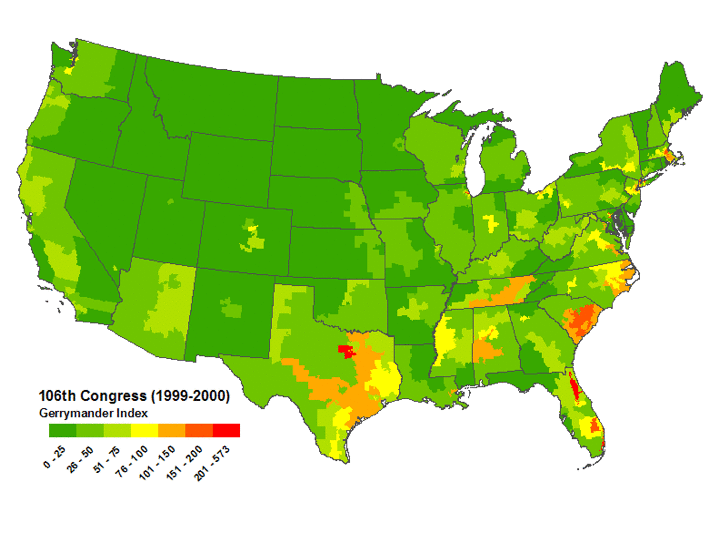
Gerrymandertude changes with time.
In the earlier 106th congress (1999-2000) it looks to the eye like the
most-gerrymandered states instead were
TX, FL, SC, MA, TN, NC, AL, VA,
in approximately worst→best order.
Mackenzie then also tried to ask:
"Is there any correlation (or anti-correlation)
between the geometric complexity (Q value) of
districts and the efficacy of their congressmen at unfairly
channeling federal money toward that district?"
But he failed to find any such connection (or if one exists,
then it is not immediately apparent in his data, the "noise"
seeming larger than the "signal").
Generic Unique-Optimum-Map Theorem (of Fundamental Importance)
Generically unique optimum Theorem:
each of the above three measures generically yields
a unique optimum
partitioning of the P people into N districts for any P≥N≥1
(max-pop district has at most 1 more person than min-pop district; "people" regarded
as disjoint points on the sphere surface).
"Generic" means if the people's locations got perturbed randomly-uniformly by ≤ε
then you'd get uniqueness with probability=1 for any ε>0, no matter how small,
starting from any set of people locations.
Proof:
Assume a flat Earth.
"Generic real numbers" disobey every polynomial equation with integer coefficients
(except for always-true equations such as 1=1). In other words they
are "algebraically unrelated."
For any partitioning of the P points
into N equi-populous subsets we can compute the centerpoints (whether mean or FSW-point)
for each subset and thus its Olson or squared-distance-based quality measure, as an
algebraic
function of the people's coordinates. Since no two algebraic functions can be equal
on generic data (because if they were, you'd get one of those forbiddden polynomial equalities),
these quality measures will have distrinct values for
every partitioning, and hence the optimum partition must generically be unique.
The perimeters-sum measure also is an algebraic function of the coordinates
(for any given partition), and a different function for each partition; so
no two partitions can have equal cost, so again the optimum is
generically unique.
For a round Earth, one can employ e.g. the stereographic projection to "flatten" it,
but then the above proof only immediately works for the sum-of-squared-based measure, because only
it is an algebraic function of the flat-map coordinates (the other two measures
also require inverse-trigonometric functions). It is, however, possible by using trigonometric
"summed angle" identities to convert any cost-equality
into an algebraic (and then further into a polynomial)
equality. For example if two sums of arccosines are equal, then take the cosine of both sides,
and apply cos(A+B)=cos(A)cos(B)-sin(A)sin(B) and use
sin(A)2+cos(A)2=1 and cos(arccos(X))=X to convert to an algebraic identity.
Q.E.D.
Another way to prove all this is to note that the number of possible ways to write
cost-equality formulae
is at most countably infinite, whereas the real numbers are uncountably infinite;
it is key that for our cost-measures any two set-partitions always have different
cost-formulae.
Of course with special (non-generic) real numbers, it is possible
for two different districtings to be exactly tied for least-cost. The virtue
is that any slight perturbation of the people-locations will (with probability 1 for a
random perturbation) break all ties.
Inequalities relating our three cost-measures
The following inequalities hold where "optimal" means the least-cost map
for that cost measure, i.e. each
occurrence of the word "optimal" has a different meaning:
0
≤
Optimal mean distance to district center
≤
(Optimal mean squared-distance to district center)1/2
≤
(Optimal mean district-perimeter)/2.
Note the middle inequality is only valid if "distances" are measured in the same way on
both sides of it (but sadly Spherical & Euclidean distances differ) but the outer
two "≤"s are valid even using the two different kinds of distances involved in
our quality definitions. The middle ≤ becomes valid with
our incompatible distances either in the flat-Earth limit or
if we weaken it by multiplying its left hand side by (2/π).
Proof:
The distance from A to B cannot exceed half the perimeter of the district
(A,B both in the district) as you can see by rigidly moving AB until both endpoints
hit a boundary. Hence the square root of the
mean squared distance to center, is ≤ the square root of the maximum
squared distance to center, which is ≤ perim/2.
Of course, that is for the districts that minimize perimeter. For the districts redrawn to
minimize mean-squared-distance, this inequality only becomes more true; and if we switch from
spherical surface distance to Euclidean 3D distance, it again only makes it more true since
the latter kind of distance is always smaller.
Next, for any set of nonnegative real numbers,
their mean
is
always ≤ the square root of their mean square.
Of course, that is for the districts that minimize mean-squared-distance.
Redrawing the districts to
minimize mean-unsquared-distance, only makes the inequality more true.
If the squared distances are measured using straight line 3D distance but the unsquared distances
are measured on the sphere surface, then that reasoning was invalid but is salvaged if
we weaken it by multiplying the left hand side by (2/π) because straight-line 3D distances
from A to B cannot be shorter than (2/π) times the sphere surface distance from A to B
(and equality occurs only if A and B are antipodal).
Q.E.D.
It is possible by positioning the people appropriately to make
each of these ≤ be very strongly obeyed, i.e. "<<";
but with a uniform distribution of people in any nicely-shaped country,
the three quantities all will
be within constant multiplicative factors of any other.
Some stupid cost-measures to shun
The above three quality-measures seem to me to be the best three
among those that people have proposed over the years (that I am aware of).
However, many stupid quality-measures have also been proposed.
Many of them are incredibly stupid to the point where my mind
absolutely boggles that professional scientists could actually have proposed them in print.
Example stupid idea #1:
The "quality" of a district is the ratio of the radius of the
smallest-enclosing circle, divided by the radius of the
largest-enclosed circle (smaller ratios better).
Example stupid idea #2:
The "quality" of a district is the ratio of the area of the
smallest-enclosing circle, divided by the area of the district
(smaller ratios better). This has been called the "Roeck (1961) measure."
An even more-peculiar related quality measure was
Schwartzberg 1966's – defined on p.108 of
Young's review
paper as
the ratio of
a polygonal pseudo-perimeter divided by
the perimeter of a circle with the same area as the district.
This, because it is based on a polyonal pseudo-perimeter, is not affected
by the real perimeter. Thus in a district-map that is square grid with
500-mile sidelengths (not bad), replacing all the square sides by
arbitrary hugely-wiggly curves
would leave the Schwartzberg quality measure unaffected,
because (as defined by Young) the pseudo-perimeter would still be the original square grid!
I saw, however, a website which (re)defined Schwartzberg using genuine, not pseudo,
perimeter. Call that "sanitized Schwartzberg"; it makes far more sense.
(I do not have access to Schwartzberg's original 1966 paper.)
Example stupid idea #3:
Inscribe the region in a rectangle with largest length/width
ratio. This ratio is ≥1,
with numbers closer to 1 corresponding to "better" regions.
(Harris 1964 and Papayanopoulos 1973.)
In all cases the quality of the whole multi-district map is obtained
by summing the qualities of all the districts within it.
A big reason these three ideas – and many others – are stupid,
is that you can take a multi-district map "optimal" by this measure, then add a ton
of essentially arbitrary wiggles to large portions of the district boundaries, while leaving the
"quality" of that map exactly the same. Here's an example for
stupid measure #1:
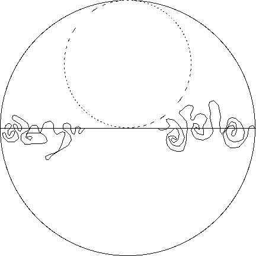
The picture shows a disc-shaped "country" subdivided by a diameter-line into
two semicircular districts, one in the North and one in the South.
This 2-district map is "optimum" by stupid quality measure #1
(dashed smaller circle is just a mental crutch to help you see that; it is not
a district boundary; for how to know this is optimum, see
Graham et al 1998 and employ the
max≥arithmetic mean≥harmonic mean≥min inequality).
However, upon making very-wiggly alterations to two
portions of the interdistrict boundary as shown,
we still have an "exactly optimum" 2-district
map (assuming the original map was optimum) according to stupid measure #1.
Similarly the hexagonal beehive ought to be optimum for both
stupid quality measures #1 and #2, but we can alter large portions of each hexagon edge by adding
almost arbitrary wiggles and still get an "exactly optimum" tesselation.
Stupid idea #3 just does not work sensibly on a round Earth
(there is no such thing as a "rectangle" if that means all four angles are 90 degrees;
if it means all 4 angles are equal and the sides come in two equal-length pairs,
then a district consisting of the entire Northern Hemisphere is "infinitely bad"!).
If we only consider it on a flat Earth, then
any region bounded by a
constant-width curve (there are an continuum-infinite
number of inequivalent such shapes)
has ratio=1 and hence is "optimal" by stupid measure #3.
Example stupid idea #4:Yamada 2009
had the idea that the cost of a districting should be the total length of its
minimum spanning forest; that is, for each district you find the minimum-length
tree (MST)
made of inter-person line segments for all the people in that district, and
the cost of the whole districting is the sum of the lengths
of all the district MSTs.
With Yamada's idea, if the people are located one each
at the vertices of the regular-hexagon "beehive,"
then every district map (so long as each district contains a connected
sub-network of the beehive) is "exactly optimum." This allows incredibly
"fuzzy hairy tree shaped" districts while still achieving "exact optimality."
There is virtually no discrimination. And presumably by perturbing these locations
arbitrarily slightly
we could break the tie in a highly arbitrary manner in which case insane
fern-shaped districts would actually be "the unique optimum"!
Summary of stupidity:
In other words, with those stupid quality measures
the "optimum" map often is infinitely non-unique,
many among these
co-optimum maps are extremely gerrymandered (design the wiggles to exclude
all the Republican voters who live near that boundary), and/or the whole concept
is massively senseless/dysfunctional on a round Earth.
It's an embarrassing sign of the dysfunctionality of this entire scientific field,
that, e.g. no previous author (before this web page) has considered the fundamental
uniqueness theorems. In short, they never reached "square one."
It seems to me, however, that my three favorite quality measures are invulnerable to those
criticisms – the "optimum" map is always a pretty decent map; and since it is
generically uniqueany attempt to
add wiggling to any boundary, will destroy optimality.
Example stupid idea #5:
Quality of a district is the
ratio of the area of the convex hull of
a district divided by the area of the district.
Example stupid idea #6:
Quality of a district is the
probability that a district will contain the shortest path between a randomly selected pair of
points in it. (Chambers & Miller 2007.)
Example stupid idea #7:
An even stupider related idea –
the average percentage of reflex angles in a polygonal
pseudo-perimeter –
was advanced by Taylor 1973.
With stupid ideas 5, 6 & 7, every convex shape is "exactly optimum."
Thus the "hexagonal beehive"
pictured in an upcoming section
is optimum, but with this stupid idea so is the "squished beehive"
with long thin needle-like districts (this picture was got by factor-2 squishing, but
stupid ideas #5-7 would still regard this as "exactly optimum" even with 99!):
But Taylor's idea #7 goes beyond even that amount of stupidity to enter whole
new regimes. Observe that Taylor's idea is not even defined for a
district that is not polygonal (e.g. has boundaries that are smooth curves, or fractals).
One could try to define it by approximating such a shape by a polygon, but then different
sequences of polygons (all sequences approaching the same limit-shape) would yield vastly different
Taylor quality measures. Thus, the Taylor measure is not a measure of shape at all!
Does this mean all those stupid ideas should be totally abandoned?
Not necessarily. Some of them could still have value if used in combination with a non-stupid
idea such as our three cost-recommendations.
For example, we could minimize the sum of district perimeters
(good idea #3) subject to the constraint
that we only permit districts having
ratio of the radius of the
smallest-enclosing circle, divided by the radius of the
largest-enclosed circle, less than 2 (stupid idea #1!) and/or
subject to the constraint
that we only allow convex district shapes (related to stupid ideas #5 and 6).
(We then would need to use total district perimeters; i.e. we do not allow
using segments of
the country-border "for free";
indeed we in this formulation would need to ignore the
country-border entirely,
regarding the people-locations as the only important thing.)
I don't see anything wrong with this sort of idea-combination (aside from the fact that
no district map satisfying the extra constraint exists, for, e.g, a very long thin country...),
and indeed some such
hybrid might be superior to either ingredient alone.
For an infinite flat earth with uniform population density...
...the optimum way to subdivide it into equi-populous districts, would be a
regular-hexagon "beehive" tessellation. (This is simultaneously
true for all three of our optimality notions. For example using Olson's measure,
the hexagon tesselation has average distance to tile-center which is approximately
98.5883% of what it would have been using the square-grid tessellation.)
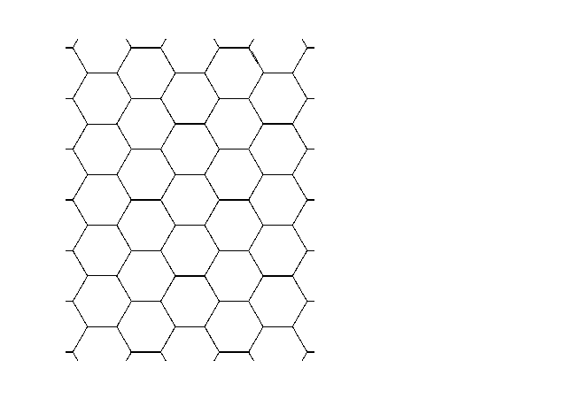
However, on a round earth, or in a finite country, or with non-uniform population density,
the pictures would change and would no longer (in general) be identical and no longer
be the regular-hexagon-beehive.
Let's apply our three quality measures to the simplest nontrivial artificial "country"
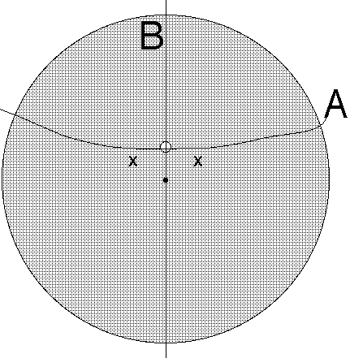
The picture shows a disc-shaped "country,"
mainly rural, but with one densely-populated city
(the small white off-center subdisc).
The population densities in the city and rural areas both are uniform and
both areas have equal total populations. For simplicity we use a flat Earth.
The problem is to divide this country into exactly two districts.
I think the "best" districting according to Olson's least-average-distance-to-center measure
is to cut the country roughly along curve A. It's a piecewise-smooth curve,
but its exact shape is complicated to describe and I do not know what it is.
The Northern district then contains about 55% of
the city and 45% of the rural area. The two district "centerpoints"
both lie within the city boundary (no matter how small & dense
the city is!).
The "best" districting according to the squared-distance-based measure
is instead to cut the country along vertical line B. The two districts are mirror images.
Each contains exactly half the city and half the rural area.
The two district
population-centerpoints then are indicated with x.
The "best" districting according to the min-perimeter measure
is just to use the city boundary. One district is 100% urban, the other 100% rural.
Why I think the perimeter-length quality measure is the best
Based on the above simple example – and also based on my intuition before I worked this
example out – I suspect
we have listed our three quality-measures in increasing order of both
goodness and simplicity – the best one
is the min-perimeter measure (3).
I'm not alone.
Election-expert Kathy Dopp has also told me (June 2011) she independently came to
the same conclusion for her own reasons: minimizing total perimeter is the best.
More precisely (Oct 2011), it seems Dopp prefers to minimize some function of the
isoperimetric ratios of the districts in the map. However, it is not clear to me
what the best such function should be. See discussion below
about "weighted sum."
Similar ideas have been advanced also in many scientific publications by other authors.
Reasons:
Measures 1 and 2 unfortunately both are pretty insensitive to
adding massive boundary wiggling, e.g. they consider a circle altered to add a ton of
small-amplitude wiggles to its boundary as
"better" than a square-shaped district (for a single district, constant population density).
In the contest paradigm, if you (a good person)
submit a sensible districting, but I (evil) have more funding, hence
more compute power and better programmers,
than you, then I'll find a "better" map by either
measure 1 or 2 (whichever is the one we are using).
I will then be able to modify
my map by adding an enormous number of
evil wiggles, while still having a "better" map than you do (because that'll only alter
my quality measure by a tiny amount which goes to zero like the square of the
maximum wiggle-size when my wiggles are made small),
hence I'll still win the contest.
To hammer that home:
suppose I'm able to beat you by 1% due to my extra compute power.
I'll keep my 1%-better map secret until 1 second before the contest deadline.
I'll then add evil wiggles of order 10% of my district size to my map, and submit that.
Note, I'll still be able to beat you,
since the square of 10% is 1%.
But wiggles of size 10%
are actually quite enormous and quite sufficient to enable very severe gerrymandering!
Evil will be able to win.
In practice the Democratic and Republican parties probably would have far more funding,
compute-power, motivation, and programmer-years to throw at it than everybody else.
Hence I worry that we might get an evil-Democrat plan or an evil-Republican plan always winning
the contests, with the non-evil non-biased non-wiggly maps, all losing.
Measures 1 and 2 each seem more
complicated to compute than the perimeter measure 3.
If we both are handed maps with N equi-populous districts, then I'll be able to evaluate
the perimeter length without needing to know or think about
the locations of every single person. All I need is a tape-measure.
Meanwhile you, in order to
compute quality-measures 1 and 2, will need to know, and do some arithmetic related to, the
location of each of the millions of people.
(Although actually I would need to know the people-locations if I wanted to be sure the
districts were equi-populous; but not if all I wanted was to compute the cost-measure.)
Measures 1 and 2
fail to enjoy the min-perimeter measure's
advantage of being easily modifiable to know about rivers, highways, etc
(discussed below).
Measure 2
can yield districts with more than one disconnected component
on the Earth-sphere. (But this problem is probably rare since on a flat Earth it
always yields connected convex districts.)
Meanwhile optimizing measures 1 and 3
automatically yields connected districts.
LATER NOTE (2018):
A new notion related to measure 2, but changing the "squared distance to
district centerpoint" to a slightly different function of distance
(generalizing the concept of
"Laguerre-Voronoi diagram" to nonEuclidean geometries) avoids this complaint.
However, I'm not 100% sure of the conclusion that min-perimeter is the best criterion.
This question of what is the best quality measure
probably cannot be answered just via pure mathematics; it requires experiment.
If somebody produced the optimum maps (for all three notions of "optimal") for
districting about 100 real-world countries, and we looked at them, then we'd have a better
idea how well they perform. As of the year 2011 nobody has done that experiment –
and it would probably be infeasible to really do it since optimal districting
is NP-hard –
but see the pretty pictures section for the closest we've come.
Countervailing nice properties of the min-squared-distance-based quality measure
But there are some valid counter-arguments that the
min-squared-distance-based quality measure (2) is better
than my favored min-perimeter measure (3).
[And the new generalization of the concept of
"Laguerre-Voronoi diagram" to nonEuclidean geometries can only bolster this view.]
The case is not entirely one-sided:
A. Under certain rules (discussed below) the min-perimeter measure
plausibly seems more vulnerable to manipulation by a (possibly corrupt) census department.
B. The squared-distance cost measure can easily be
modified so that districts not only tend to be
geographically compact,
but also tend to group people with common interests together.
To do that, associate an "interest vector" with each person.
Each person now has more than 3 coordinates; the extra dimensions represent her interests.
We now can use the same squared-distance-based
cost measure as before, just in a higher-dimensional space.
(I happen to hate that idea because:
what qualifies as an "interest" and by how much should
we scale each interest? Whoever arbitrarily decides those things, will control the world.)
C. The squared-distance-based measure has this beautiful property which in general is disobeyed
by the other two:
Voronoi Characterization Theorem:
The "optimum" N-district map according to the
squared-distance-based measure always subdivides the population in such
a way that the districts are "Voronoi regions." That is, associated with each district k,
is a magic point xk in 4-space, such that the inhabitants of
district k consist exactly
of the people closer to
xk than to any xj with j≠k.
[Yes, I did say four-dimensional space! Use coordinates w,x,y,z. Every point on the
Earth has w=0, but those N magic points are allowed to have w≥0. The x,y,z coordinates of a
district's magic point are just the mean x,y,z for its inhabitants.]
Remark:
This makes describing the exact shapes of the districts very simple – they always are
convex polyhedra
in 3-space – makes it easy for anybody to determine which district they are in
(simply compute your N distances to the N magic points; which is closest tells you your district)
– and finally
makes it much easier for a computer to try to search for the optimum districting.
Note also that if our districts are small enough that it is OK to approximate the Earth as
"flat," i.e. 2-dimensional, then the regions are Voronoi regions whose magic
points now lie merely in 3-space, and the Voronoi polyhedra, when we only look on the plane,
reduce to convex polygons. In other words, on a flat Earth, the optimum N-district map
always has convex polygonal districts. That's very nice.
Unfortunately on a round earth, it is not quite so simple.
The optimum map's
districts, although still convex polyhedra in 3-space, if just viewed on the sphere surface
become usually-nonconvex "polygons"
whose "edges" are non-geodesic circular arcs; and it is possible
for a district to consist of more than one disconnected
such polygons. For example consider N-1
equipopulous cities equi-spaced along the equator, plus two half-population cities at the
North and South poles, plus a uniform distribution
of a comparatively tiny number of rural people.
The best N-district map (if N is sufficiently large)
then has N-1 identical
districts each containing
a single equatorial city, plus an Nth district consisting
of two disconnected regions containing both poles
(all districts have equal area and equal population).
Even so, though, a very concise exact description of the optimum map exists – simply
give the 4N coordinates specifying the N magic points. If we only permit thus-specified
maps as contest-entrants, that prevents ultra-wiggly district boundaries, whereupon the
criticism A
of the sum-of-squares-based quality measure – that an evil computationally-powerful
contest-entrant could submit a wiggly map and still win – is avoided.
Proof:
See §5.3 of Spann, Gulotta & Kane
for a beautiful proof employing the duality theorem for
linear programming
(which in turn is discussed in Dantzig 1963).
Their -Cj is the same (up to an arbitrary overall additive constant)
as our +wj2, and
their pi is the "magic point" associated with district i, whose (x,y,z)
coordinates, note, are seen to be the means of the people-locations in district i.
Q.E.D.
Extension to handle Olson:
The same Spann proof also will show a related theorem about what the Olson-optimum
districting is: It always is
an "additively weighted Voronoi diagram" for the sphere surface metric
(basically you just go through their
proof but now using unsquared distances).
In other words, associated with each optimum-Olson district k
is both a magic point Mk on the sphere surface (the FSW point)
and a real
"additive weight" Ak; and the kth optimal-Olson
district consists precisely of
the points x on the sphere such that
SurfaceDist(x, Mk) + Ak <
SurfaceDist(x, Mj) + Aj for every j≠k.
The regions in such a diagram are
in general nonconvex (but always connected) and have boundaries described
piecewise by certain algebraic curves.
On a flat earth the district boundary curves are
(piecewise) hyperbola-arcs and line segments; and the regions always are connected, although
usually nonconvex.
Generalization of the concept of "Laguerre-Voronoi diagram" to nonEuclidean geometries
(This section added 2018 by WDS.)
The above "Voronoi characterization theorem"
describing the optimum districting
(for quality measure 2
arising from sum-of-squared-Euclidean-distances from people to their district centerpoint)
as a Voronoi diagram in a four dimensional space
had several disadvantages on a round Earth.
It turns out to be possible to eliminate those disadvantages by modifying the
squaring function x→x2 slightly, as follows.
We shall see exactly one (up to rescaling and additive offsets)
"magic function" works.
Our 4-dimensional Voronoi diagram, when we restrict attention to
the 3-dimensional subspace w=0, i.e. our usual (x,y,z) space, really is
a Laguerre-Voronoi diagram
(also sometimes called a "power diagram")
in 3 dimensions.
Definitions:
A "Voronoi diagram"
of N point sites in a Euclidean space, is the partition of that space
into the N "Voronoi regions," region k consisting of all the points P of the space lying
closer to site k than to any other, i.e. such that
for all j≠k. Each region is a (possibly unbounded) convex polyhedron.
A "Laguerre-Voronoi diagram"
of N weighted point sites in a Euclidean space
(each site k now having a real-number-valued "weight" Wk)
is a partition of that space
into N "Laguerre regions."
Region k consists of all the points P of the space such that
for all j≠k. Each region is a (possibly unbounded) convex polyhedron.
[The reason why our 4D Voronoi diagram is in 3D a Laguerre diagram is:
consider making Wk equal the squared extra-coordinate (4th dimension).
Note also that the Laguerre-Voronoi concept generalizes the Voronoi concept,
because the latter arises as the special case when all the site-weights are equal]
It is possible to generalize the Laguerre-Voronoi diagram concept to nonEuclidean
geometries. For the districting problem, the surface of the sphere is
the 2-dimensional nonEuclidean geometry we want, and along-surface travel-distance is
its natural distance function. Mathematicians can also consider
"hyperbolic geometry" in addition to that "spherical geometry" (and both
in any number of dimensions). It turns out there is a unique natural way to do
that, which is presented here for the first time in the hyperbolic case. For a brief shining
week or two in 2017
I thought I was the first inventor of this concept in the spherical-geometry case too,
but then I found out that my exact same concept had already been published by
Kokichi Sugihara in 2002. But I am going to develop this my way,
taking the nonEuclidean geometry point of view.
You can read Sugihara's paper to see his way.
With the Sugihara/Smith nonEuclidean Laguerre-Voronoi diagram, the regions always are
nonEuclidean convex polygons (in 2-dimensional nonEuclidean spaces) –
or in general dimension are convex polytopes.
That is, we have the Convex-region Theorem:
for any two points P and Q within the same region,
the entire geodesic arc defining the unique shortest-distance-path from P to Q,
always lies within it.
Connectedness Corollary:
each region is a connected set.
Asterisk:
in the spherical case, this theorem & corollary need only hold for
Laguerre regions entirely containable within a single hemisphere.
Indeed the whole Sugihara diagram
concept breaks down if too-large districts, specifically those
not containable within any single hemisphere, are permitted.
Fortunately, I have checked that
every continent, as well as the multicontinent Africa-Europe-Asia and N+S America contiguous
land masses, each are containable within a single hemisphere.
Therefore, on our planet this asterisk should not
be much of a limitation.
The whole diagram (or political districting, if that is what we use it for) still is
describable very simply: each district is specified by its single "power-center" point (which
for Sugihara diagrams always lies on the surface of the Earth) and its real weight.
Terminology note: The "power-center" point for district k, is weighted-site k.
The time has come to actually explain what this concept is.
The Sugihara/Smith nonEuclidean generalization of "Laguerre-Voronoi diagram."
For N weighted point sites in a nonEuclidean space –
each site k having a real-number-valued "weight" Wk –
the diagram is the partition of the space into
the N "Laguerre regions."
Region k consists of all the points P of the space
such that
for all j≠k.
We have stated this magic formula using the magic function ln(sec(θ))
for the spherical-geometry case, where
the NonEuclideanDistance is angular surface distance (i.e.
"distance" from A to B is the angle subtended by A and B at the Earth's center).
Note that sec(θ) is well behaved when 0≤θ<π/2,
but sec(π/2) goes infinite. That is the reason for the
"asterisk."
If you instead want hyperbolic geometry
(which is the only other nonEuclidean geometry), then
replace all occurences of "sec" in the formula & function
by "cosh" and use the natural hyperbolic
distance metric (i.e. with unit curvature).
Each Laguerre region then
is a convex polyhedron, which, in the hyperbolic case, possibly is unbounded.
Uniqueness theorem:
In the spherical case, if any other function of θ
besides A+Bln(sec(θ)) where A and B>0 are real constants,
had been used, then the resulting diagram would, in general, fail
to have convex regions. I.e. our function truly is "magic"; no other works.
Similarly in the hyperbolic geometry case, only functions of form
A+Bln(cosh(Δ)) work.
The key underlying fact which makes
the convexity and uniqueness theorems true
I don't want to prove them here, but
the proofs are easy once you know this...
hint: consider walking along the boundary between two
adjacent Laguerre regions, beginning
at the point Q on the line between their two power-centers A and B.
This walk will be along one leg of a right triangle, the other leg being QA...
is the
NonEuclidean generalization of the Pythagorean theorem:
For points A,B,C in a Euclidean space, forming a right-angled triangle
(the right angle is at C), let
a=Dist(B,C)=leg#1, b=dist(A,C)=leg#2, c=dist(A,B)=hypotenuse.
Then the famous
Pythagorean theorem
states that
c2 = a2 + b2,
and in this formula only the squaring function x→x2
(and its multiples by arbitrary positive scaling constants) works.
If instead A,B,C are the vertices of a
spherical right-triangle,
i.e. one drawn on the surface of a sphere using geodesic arcs as edges, then
if a,b,c, are measured using angular surface-distance
ln(sec(c)) = ln(sec(a)) + ln(sec(b)),
and in this formula only the ln(sec(θ)) function
(or its multiples by arbitrary positive scaling constants) works.
And if A,B,C instead are the vertices of a hyperbolic right-triangle,
i.e. one drawn on the
hyperbolic
nonEuclidean plane (and measuring distances geodesically), we have
ln(cosh(c)) = ln(cosh(a)) + ln(cosh(b)),
and in this formula only the ln(cosh(Δ)) function
(or its multiples by arbitrary positive scaling constants) works.
For political readers interested only in the round Earth: you can just ignore everything
I say about hyperbolic geometry or about nonEuclidean dimensions other than 2.
(Meanwhile mathematicians can secretly exult in
your superiority over those political readers.)
The nonEuclidean Pythagorean theorem and its uniqueness are well known
and will be found (in essence; they state it in other forms than I do)
in every book on nonEuclidean gemetry and nonEuclidean trigonometry.
Two such books are Coxeter and Fenchel.
in the limit of small distances u and v ("small" by comparison to an
an Earth radius, or to the radius of curvature of the hyperbolic space)
the nonEuclidean Pythagorean theorems reduce to the ordinary
Euclidean one (because all terms other than the first in each of these series
become negligibly small).
Dot-product characterization:
Notice also in the spherical case that
ln(sec(AngularDistance(A,B))) = -ln(A·B/R2)
where A·B denotes the "dot product" of the two 3-vectors A and B,
if R is the radius of the Earth and the origin of the 3-dimensional coordinate system
is the Earth's center. The hyperbolic geometry version of that is
where ⟨A,B⟩ denotes the
Minkowskian inner
product
(including one negative sign for the "time"-coordinate) where the points A and B both
lie on the "pseudosphere," i.e. ⟨A,A⟩=-1.
(By the "pseudosphere" we here mean the positive-time sheet of the
2-sheeted hyperboloid ⟨A,A⟩=-1; the points on this surface under the Minkowski
pseudometric become metrically equivalent to the genuine metric of
timeless hyperbolic geometry.)
Polyhedron characterization of the diagram:
Consequently, the 2D-nonEuclidean diagram regions can be regarded as the
N faces of a certain convex polyhedron in 3D Euclidean space.
Specifically, let us describe this in
the case of the surface of the unit-radius sphere in (x,y,z) space.
With region k, associate a 3-dimensional halfspace Hk whose
defining plane lies at Euclidean distance
exp(Wk)
from the Earth's center (specifically, the halfspace is the points
on the Earth-center's side of this plane), such that the
ray from the Earth-center to the closest point of that plane, passes through
site k. As a formula this halfspace is X·S<S·S
where S is the point at distance exp(Wk) along that ray.
The polyhedron is the intersection of these N halfspaces.
The diagram is the projection of this polyhedron's surface
along radial lines onto the sphere-surface.
In the hyperbolic D-space case, the halfspace associated with point S
arises from the hyperplane
⟨X,S⟩<⟨S,S⟩
in Minkowski (D+1)-dimensional space, where S lies on the ray from the origin passing
through the site (located on the pseudosphere surface ⟨X,X⟩=-1) but at Minkowski
distance exp(Wk), not 1, from the origin. The polyhedron is the intersection of
these N halfspaces. The Laguerre-Voronoi diagram then arises by projecting this polyhedron's surface
onto the psuedosphere along lines through the origin.
Sugihara actually programmed an O(NlogN)-time O(N)-memory-words algorithm
to compute the Sugihara Laguerre-Voronoi
diagram of N sites on a sphere. I also claim
an analogous algorithm exists in the hyperbolic case.
With our characterization of the 2D nonEuclidean diagrams as a polyhedron
defined as the intersection of N halfspaces in a 3D Euclidean space,
it is trivial to create such algorithms by simply stealing known NlogN-time
algorithms, e.g. the one by Preparata & Muller 1979,
for constructing halfspace-intersections.
More generally:
Algorithmic complexity theorem:
The Laguerre-Voronoi diagram of any N weighted point-sites
in any Euclidean or nonEuclidean space of dimension D≥1 can be computed in the same
(up to constant factors) amount of
time and memory as it takes to compute the intersection of N halfspaces in
a (D+1)-dimensional Euclidean space, which also is known
(as a consequence of "geometric duality")
to be the same as the amounts
of time and memory it takes to compute the convex hull of N points in
a (D+1)-dimensional Euclidean space.
Other equivalent ways to write those "magic formulas":
Consider the trig identities
2sin(θ)2=1-cos(2θ)
and
2sinh(Δ)2=cosh(2Δ)-1.
Therefore our magic function
ln(sec(θ))
can equivalently be rewritten
-ln(1-2sin(θ/2)2)
and since the Euclidean 3D distance between two points on the surface
of a unit-radius spherical Earth separated by angle θ
is 2sin(θ/2)), this is just
-ln(1-EuclideanDist2/2).
This clarifies how the Euclidean Laguerre diagram arises from squared distances,
and the spherical nonEuclidean geometry Laguerre diagram arises from a magic formula
which actually also has quite a lot to do with squared Euclidean distances.
Similarly in the hyperbolic geometry world our magic function
ln(cosh(Δ))
can equivalently be rewritten as
ln(1+2sinh(Δ/2)2)
and
ln(1+MinkowskiPseudoDist2/2).
A few useful properties of those "magic functions":
ln(sec(θ) is an increasing and concave-∪ function of
θ for 0≤θ<π/2.
[To prove increasing, note its derivative is tan(θ), which is positive;
and tan(x) is increasing, from which the concavity follows.]
And -ln(1-E2/2) is an increasing
and concave-∪ function of E for 0≤E<√2.
[To prove: note its derivative is 2E/(2-E2) which is positive
and increasing.]
ln(cosh(Δ) is an increasing and concave-∪ function of
Δ for 0≤Δ<∞.
[To prove: note its derivative is tanh(Δ), which is positive
and increasing.]
And ln(1+M2/2) is an increasing
and concave-∪ function of M for 0≤M<√2.
[To prove increasing: note its derivative is 2M/(2+M2) which is positive.
To prove concave-∪: its second derivative is
2(2-M2)/(2+M2)2
which is positive when |M|<√2.]
Uniqueness Consequence:
The power-center S of a set P of points in a nonEuclidean geometry, now meaning
the location S minimizing ∑j F(NonEucDist(Pj,S)),
where F is the magic function for that geometry [e.g. F(θ)=ln(sec(θ))]
exists and is unique, with the asterisk in the spherical case that all
points of P must be contained within some single hemisphere and the
power-center is demanded to lie within angular distance<π/2 from every point.
Proof:
The "cost" quantity being minimized is a concave-∪ function (meaning it is concave-∪
along any geodesic) of S. Therefore if it has a minimum it necessarily is unique.
In the hyperbolic case it is obvious a minimum must exist because the cost goes
to infinity at large distances. In the spherical case
one exists by compactness.
The concave-∪ nature of it is because a spherical rotation of any concave-∪
function is concave-∪ and the sum of concave-∪; functions is
concave-∪.
Q.E.D.
Should we combine district costs via weighted summation?
Our three favorite cost measures for districts were
Sum of distances of district-residents to district-centerpoint
Sum of squared distances
District's perimeter
We then suggested that the cost of a multidistrict map should be just the sum of the
individual district costs.
But maybe that latter idea was too simplistic. Perhaps instead of
a plain sum, we should use some sort of weighted sum.
Advantages of plain unweighted sum:
It is unbiased: district #1 is not "unfairly favored" over district #2.
It is simple.
Adding yields something related to or interpretable as some
kind of genuine physical or economic cost.
I.e. with Olson's sum-of-distances measure, we get a "total travel cost" (or at least, something
rather related to one) and it makes societal sense to minimize that, because it
approximates a real economic cost (money) or real physical (e.g. energy) cost.
Minimizing sum of squared distances is similar but tends to "even it out" more.
That is, if the travel costs for four people were 1,1,1,9 (sum=12, sum-of-squares=84)
that does have smaller total cost than 2,3,4,5 (sum=14, sum-of-squares=72)
but the latter is more "fair" since
it does not "discriminate" as much against the poor fellow with cost=9.
Also, squared distances, since they are areas,
correspond to some intuitive notion
of "compactness" of a district.
Minimizing perimeter tends to "even it out" even more, since half the
perimeter upperbounds the
maximum travel distance
from any district-resident to any other, so minimizing that tends to help the
worst-off resident.
Disadvantages of plain unweighted sum:
One could argue, however, that what we need to focus on is not
economic or physical costs, but rather political costs,
as measured in votes. In that view, if we have a tiny (since
densely populated) district, some amount of geometrical badness for
it should count the same as, not less than,
a much-larger-scaled (since sparsely populated) district of
the same shape – since they both contain the same number of votes.
This can be accomplished "fairly" by weighting our summands by
appropriate negative powers of the district areas, as follows:
If cost(district) = sum of distances of district-residents to district-centerpoint,
then multidistrict map cost = ∑D area(D)-1/2 cost(D)
If cost(district) = sum of squared inter-resident distances,
then multidistrict map cost = ∑D area(D)-1 cost(D)
If cost(district) = its perimeter,
then multidistrict map cost = ∑D area(D)-1/2 cost(D).
Note the powers are chosen so the final cost comes out dimensionless (as it should
since votes are dimensionless, unlike
areas and lengths).
One could also consider using powers of district perimeters or diameters, instead of areas.
Criticisms of area-based (or other) weighting:
Unfortunately
these kinds of weighting destroy some of the nice theoretical properties of our cost measures.
For example, with weighted-Olson, optimum-cost maps now will be
"additively and multiplicatively
weighted Voronoi diagrams."
The regions (districts) in such diagrams (even on a flat earth) each now can be
very non-convex, can be disconnected into very many components,
and can have many holes.
Also, this kind of weighting can inspire an optimizer to artificially "bloat" small-area districts
just in order to decrease their weights, in opposition to the whole goal of keeping
districts "compact."
With area-1/2-weighted Olson,
"good" districts would no longer be cities or chunks of cities anymore, they would be
"chunks of cities that always also have a large rural area attached."
Ditto if the weighting instead is based on diameter-1.
Weighting by negative powers of district
perimeters would be even worse in this respect
since the optimizer then would be inspired to add wiggles to boundaries!
Indeed with district map costs based on the Olson or squared-distances measures using
weighted-sum-combining using perimeter-1
and perimeter-2 as weights,
optimum maps would not even exist
due to this problem – a devastating indictment!
Verdict:
In view of these criticisms, in my opinion at most one among
the 9 possible weighted-sum schemes I considered (based on
our 3 favorite district costs and 3 types of weighting based on
powers of area, perimeter, and diameter; 3×3=9)
can remain acceptable:
If cost(district) = its perimeter,
then multidistrict map cost = ∑D area(D)-1/2 perimeter(D).
I have called this the sanitized Schwartzberg
cost above. Warning:
If you do this, then
you must not use the outer boundary of a country as part of district-perimeters.
(if you tried, then a country with a very wiggly boundary, would artificially always get only
huge-area districts adjacent to the country's border! For a country with a fractal boundary,
optimum map either would not exist or would be insane!).
Instead you must take the view that the country has no boundary and is defined only by its
set of residents (points); or the view that the country's boundary "costs nothing"
and only inter-district boundaries cost anything.
Sanitized Schwartzberg also will suffer, though to a lesser extent, from the optimizer
artificially "bloating" small-area districts. (Sanitized Schwartzberg in some sense does
not encourage such bloating
but also no longer discourages it.) With plain unweighted perimeter minimization,
the optimum map for a country with one geographically compact city would usually
be: some districts 100% rural, some
districts 100% urban, with at most one mixed district.
But with sanitized Schwartzberg, it could well be happy to make, say,
four mixed urban+rural districts (e.g. three each containing about 0.2 of the city plus 0.8 of a
normal-sized rural district, plus one with 0.4 of the city and 0.6 of a
normal-sized rural district) and all the rest entirely rural, without any
pure-urban districts at all.
An ad hoc compromise scheme which both discourages such bloat, but also tries to gain some
of the benefits of Schwartzbergian thinking, would be
This proposal would still be dimensionless. Yet another idea related to our original
sum-of-perimeters (dimensionful) idea would be to minimize
Multidistrict map cost = ∑D perimeter(D)2.
It is not obvious to me what is best among the ideas of this ilk.
The NP-completeness of optimum districting problems
What are P and NP?
A computer program which, given B bits of input, always runs to completion in a
number of steps bounded by a polynomial in B, is called a "polynomial-time algorithm."
The set of problems soluble by polynomial-time algorithms is called polynomial time
(often denoted "P" for short). The set of problems whose solutions, once somehow found, may be
verified by a polynomial-time algorithm, is called "NP."
It is generally believed – although proving this is a million-dollar open problem –
that hard problems exist whose solutions (once found) are easy to verify –
i.e. P≠NP. Examples:
Factoring an N-digit integer into primes, appears to be hard. But
verifying that a claimed factorization really works, turns out to be easy, i.e. in P.
Another example: it is easy to verify that some graph is "colorable" using K colors,
once somebody shows you the coloring. But actually finding a valid
way to color it using ≤K colors, is hard (known to be NP-complete).
An "NP-hard" problem is one such that, if anybody ever found a polytime algorithm
capable of solving it, then there would be polytime algorithms for every NP problem.
An "NP-complete" problem is an NP-hard problem that is in NP.
Many NP-hard and NP-complete problems have been identified.
One classic example is the "3SAT" problem,
which asks whether an N-bit binary sequence exists meeting certain logical conditions
(those conditions are specified by the problem poser as part of the input).
If P≠NP, then every NP-hard problem actually is hard, i.e. cannot always be
solved by any polynomial-time algorithm. In particular, if P≠NP then 3SAT problems
cannot always be solved by any polynomial-time algorithm.
See
Garey & Johnson's book
for a much more extensive introduction to NP-completeness,
including long lists of NP-complete problems and how to prove
problems NP-complete.
It was shown by
Megiddo & Supowit 1984,
that this yes-no problem is NP-hard:
Given the (integer) coordinates of a set of people (points) on a flat Earth, and
an integer N, and a rational number X: does
there exist a way to subdivide the people into N
equipopulous disjoint subsets ("districts")
having Olson cost-measure less than X? (Yes or no?)
Therefore (unless P=NP)
Olson-optimal districting is hard, i.e.
not accomplishable by any algorithm in
time always bounded by any fixed
polynomial in the number of people, the number of districts, and the number of bits
in all those coordinates.
Mahajan et al 2009, by adapting
Megiddo & Supowit's method,
showed that the same yes-no problem, but using the sum-of-squared-distances-based
cost measure instead of Olson's, is NP-hard.
We should note that
those two proofs actually addressed different problems than we said.
However, it is almost trivial
to modify them to make their NP-hard
point-set have equal numbers of points in each "district."
Then those proofs show NP-hardness of
optimal equipopulous districting.
So the realization of the NP-hardness of districting is really a new result by me;
but my "new contribution" is only 1% because 99% of the work was done in these previous papers.
Another interesting NP-complete problem is the problem of finding the shortest 100-0
gerrymander. More precisely, given N points in the plane, some red and some blue,
if you are asked to find the shortest-perimeter polygon containing all the red points
but none of the blue points inside, that's NP-hard.
There's a very easy NP-hardness proof if we happen to already know that the problem of
finding (or merely approximating to within a factor of 1+N-2)
the shortest traveling salesman tour of N points in the plane, is NP-hard.
You simply place N red points in the plane then place N blue points each extremely near to
a red point (each red has a blue "wife"). Then the polygon separating the red and blue points
must pass extremely near to each red point in order to separate each husband-wife pair
hence must be a "traveling salesman tour" of the red (or of the blue) points. In other
words, optimally solving the 100-0 gerrymander problem is at least as hard as
optimally solving the plane traveling salesman problem, hence is NP-hard.
You should now find it almost as trivial to
prove that the problem of, e.g. finding the shortest-perimeter polygon enclosing
exactly 50% of the points and having at least a 51-49 red:blue majority on its inside,
is NP-hard (for any particular values of 50 and 51).
Unfortunately, this all
won't stop gerrymanderers because they don't give a damn about the "quality"
(minimizing the length) of their gerrymander.
There are different flavors of NP-hardness.
For some optimization problems it is NP-hard
even to approximate the optimum value to within any fixed constant multiplicative factor.
(Example: the chromatic number problem for graphs. Indeed, even the logarithm of
the chromatic number for graphs.)
For others, it is NP-hard to get within a factor of 1+ε of the optimum cost
for any positive ε below some threshhold – this class is called
APX-hard.
(Example is the "triangle packing problem" –
phrased as a maximization problem this is:
given a graph, what is the maximum number of vertex-disjoint triangles
that exist inside that graph? A related problem, which also is APX-complete, is
the same but for edge-disjoint triangles.)
For other problems, it is possible in polynomial time (but which polynomial it is, depends upon
1/ε in a possibly non-polynomial manner) to get within 1+ε of the optimum cost
for any ε>0
– that is called a "polynomial-time approximation scheme," or PTAS.
(Example: the NP-hard "traveling salesman problem" in the Euclidean plane has a PTAS.)
No PTAS can exist for any APX-hard or APX-complete problem, unless P=NP.
It is presently unknown whether the districting problem based on
either Olson's or the sum-of-squared-distances
cost measure has a PTAS, or is APX-hard, or what. Those NP-hardness proofs only pertain
to finding the exact optimum and do
not address approximability questions.
Another important flavor-distinction in the NP-completeness world
is weak versus strong NP-hardness.
Suppose some NP-hard problem's input includes a bunch of numbers.
If requiring those numbers to be input in unary
(greater number of input bits) causes the problem to become soluble by an algorithm running in
time bounded by a polynomial in this new longer input length, then that
was only a weakly NP-hard problem. The most famous example of this is
the "number partition" problem where the input is a set of numbers, and the yes-no
question is: does there exist a subset of those numbers, whose sum is exactly half of the
total?
Our above two districting NP-completeness results both are "strong."
It is trivial to use the number partition problem to see that
the following problem is weakly NP-complete:
Two-district min-cutlength problem with cities:
The input is a simple polygon "country" in the Euclidean plane, and a set of
disjoint circular-disc "cities"
lying entirely inside that country, each regarded as containing uniform
population density; and for each city the problem-input further specifies its positive integer
population. Also input is a rational number X. The yes-no question:
Is there a way to cut the country apart, using total cutlength≤X, into two
now-disconnected-from-each-other sets, each having exactly equal population?
Furthermore, by shaping the country appropriately with tiny
narrow bits and
making the cities all lie
far from both each other and the country's border, we can see that
it is weakly NP-hard even to approximate the minimum cutlength to within
any constant factor!
That proof depended heavily upon the requirement that
the population-split be exactly 50-50.
However,
Fukuyama 2006
used a cleverer version of the same idea with a "tree shaped" country
to show that,
even if we did not require a 50-50
split, but instead were satisfied with a
(≥F):(≤100-F)
split for
any fixed percentage F (0<F≤50 with F either rational or quadratic irrational),
it still is weakly NP-hard to
approximate the minimum cutlength to within
any constant factor.
However, this can be criticized for being only a "weak" NP-hardness result.
With only this result, it would remain conceivable that if the population
had to be specified by stating coordinates for each person, that then the min-perimeter
districting problem would become polynomial-time soluble, or have a PTAS.
A different criticism:
if instead of the cutlength, we used the entire sum of
district perimeters as the cost measure (i.e. no longer allowing use of the country's own
border "for free") then it would be
conceivable that the min-perimeter
districting problem would have a PTAS (although finding the exact
optimum would remain NP-hard).
The first criticism
can be overcome by using the fact
(proven in theorem 4.6 of Hunt et al 1998)
that
partition into triangles remains NP-complete even in
planar graphs with bounded maximum valence.
It follows easily from this that
Theorem:
Min-cutlength
districting into 3-person districts
is strongly NP-hard in the Euclidean plane for polygonal countries with polygonal holes,
with the locations of each inhabitant specified one at a time.
Proof sketch:
Make a country which looks like a "road map"
of a planar graph with maximum valence≤5;
and make each road have a narrow stretch.
In other words, our country is an archipelago whose islands are joined by roads across
bridges over the sea; the road-surfaces also count as part of the "country."
Place one person at each vertex (or equivalently, place one city well inside
each island, all cities have the same population). All the narrow portions of the
roads have equal tiny widths.
There will be V people in all for a V-vertex E-edge graph, with V divisible by 3.
It is possible to divide this country into V/3 different
3-person districts by cutting E-V edges at their narrow parts if, and only if, the
graph has a partition into triangles. (Otherwise more cutting would need to be done.)
Q.E.D.
Example:
The picture shows
Louisiana districted using the
shortest splitline algorithm using year-2000 census data.
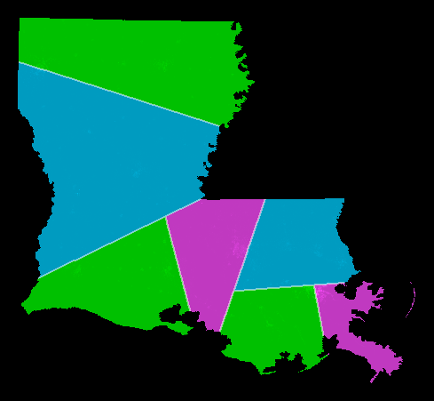
Want N=7 districts.
Split at top level: 7 = 4+3. This is the NNE-directed splitline.
Split at 2nd level: 7 = (2+2) + (1+2).
Split at 3rd level: 7 = ((1+1) + (1+1)) + ((1) + (1+1)).
result: 7 districts, all exactly equipopulous.
For theoretical investigation trying to determine the fastest possible
algorithmic way to implement the
shortest splitline algorithm, see this.
For a discussion of several interesting SSA variants,
see this page.
Two-phase improvement algorithms for Olson's and
the squared-distance-based measure (also applicable to nonEuclidean Laguerre-Voronoi)
We suppose there are P "people" (points with known coordinates)
whom we wish to subdivide into N "districts" (disjoint subsets)
which are equipopulous (up to a single extra person), P≥N≥2.
Begin with some N-district subdivision. Now
For each of the current districts
(each represented as the set of people in it), find a better, i.e. lower-cost,
center.
If we are using the sum-of-squared-distances cost measure, the best center
is the mean-location in 3-space of all its people.
If we are using Olson's cost measure, the best center for a district is its FSW-point,
but merely improving the center can be accomplished by
performing one Weiszfeld
iteration starting from its current center.
For the current set of district centerpoints, find a better,
i.e. lower-cost, assignment of the people to the districts.
It is simplest to require this assignment to make all districts equi-populous.
However we instead could add K times the sum of the squares of the district populations
to the cost function
which automatically would cause the district-populations to tend to equilibrate, without actually
explicitly enforcing that, in the limit K→∞.
The best assignment may be found in polynomial(P) time by finding the min-cost
matching
in a bipartite graph, whose P red vertices are the people and whose
N⌊P/N⌋
blue vertices are pre-labeled with the names of the N districts (⌊P/N⌋
copies of each) and the cost of an edge is the surface-distance (or squared 3D Euclidean
distance) from that person
to that district's centerpoint. Then match the P-N⌊P/N⌋
leftover people to the N district centerpoints
in a second run on another bipartite graph with N+P-N⌊P/N⌋<2N vertices.
The Hungarian Algorithm
finds these optimum matchings in O(P3) steps.
Other
algorithms by Varadarajan & Agarwal
accomplish the same thing faster
(albeit in some cases only approximately) although some of their algorithms are
much more complicated.
Merely improving the current assignment can be accomplished by
performing just one of the P stages of the Hungarian algorithm (finding a "negative-sum cycle"
in the bipartite graph, whose edges are alternately in and not in the current matching;
then these two edge subsets are swapped); this takes only O(P2) steps.
[In practice I'd recommend that idea, if used, be done for a random subset of
only about 10NlogN of the P people, i.e. effectively reducing the population P to a much
smaller number; the full population need only be brought in once we've gotten
quite near optimality for districting a random reduced subset of the population.]
By using the Voronoi Theorem we can improve our assignments much
faster than that, in more like O(PN) time, while totally avoiding any need to think about
bipartite matchings.
For the sum-of-squares-based cost measure, we maintain the locations of the centers in
four-dimensional space
and then realize via the theorem that the best
assignment is simply to assign each person to her closest center!
(With Olson we use coordinates on the sphere
plus one additional "additive weight" coordinate for each center,
then assign each point to the center with least additively-weighted distance.)
This may not result in equipopulous districts; but then we can
increase the
value of the square of
the extra (4th) coordinate [or with Olson increase the additive weight]
for each district having the maximum number of people, by adding Δ.
The best Δ>0 (which most-decreases the maximum population-disparity, or
leaves it the same while most-decreasing the total population in that subset of
districts) can be found by a 1-dimensional search.
Actually, it is possible –
by building the Voronoi-esque diagrams on the sphere in O(NlogN) time,
then using fast point-location techniques from computational geometry – to
speed up the time O(PN) for a 2-phase improvement iteration
to O([P+N]logN). But we shall not discuss that. O(PN) is fast enough.
We simply continue applying these two-phase improvement
cycles until no further improvement is possible, then stop.
At that point we have found a "local optimum" districting, i.e. one whose cost cannot be decreased
either
by moving the district centers or by differently assigning the people to those district-centers
(but improvement could be possible by doing both simultaneously).
Each 2-phase improvement step takes only
polynomial time, but it is conceivable that an exponentially long chain of
improvements will happen (see
Vattani 2011 for a point set in the plane
that causes our 2-phase iteration to iterate an exponentially large number of times,
all the while keeping all districts equipopulous to within an
additive constant). But usually the number needed is small.
We can perform this whole optimization
process many times starting from different initial district-maps,
selecting only the best among the many locally-optimum maps thus produced.
implements a public source
computer program for a two-phase improvement districting algorithm
somewhat like the one we sketched; it inputs
US census data and outputs district maps but (at least at prsent)
demands a "flat earth."
Heuristically good (but random) places to start improving from
The 2-phase improvement technique above is very elegant.
However, it could get stuck in a local, but not global, optimum.
It would be nicer if we somehow could guarantee at least some decent probability of
getting at least within some
constant factor of optimum-quality.
Heuristic algorithm based on matching:
Here's an interesting idea. Observe that if P=2N, i.e. if we were trying to
divide our country into "districts" each containing exactly 2 people, then the
optimum districting
(for any of our three quality measures) could actually be found in polynomial(N)
time by finding a min-cost matching in the complete (nonbipartite) graph of all
people (with edge cost being the squared-Euclidean or unsquared-spherical distance between the
two people).
But in the real world P>>N.
That suggests taking a uniform random sample, of, say, 256N people from among the P,
then finding their min-cost matching and replacing each matched person-pair by a random point
on the line segment joining them
(thus reducing to 128N pseudo-people) then continuing on reducing to 64N, 32N, 16N, 8N,
4N, and finally 2N pseudo-people, then employing their matching's midpoints as our N initial
district centers for use with the 2-phase improvement procedure.
Software exists which will solve an N-point geometric matching task
quickly and usually almost-optimally for the numbers of points we
have in mind here (Fekete et al 2002).
Easy Lower Bound Theorem:
The expected cost of the min-cost matching among 2N random people (using squared
distances as
edge costs) is a lower bound on the mean-squared-interperson-distance
cost measure for the optimum N-district map.
Half
the expected cost of the min-cost matching among 2N random people (now
using unsquared spherical distances as
edge costs) is a lower bound on the Olson
mean-distance-to-district-center
cost measure for the optimum N-district map.
This theorem usually makes it computationally feasible to
gain high confidence that some districting is within a factor of 2.37 (or whatever the
number happens to be for that map) of
optimum under the squared-distance-based and Olson cost measures and hence (in view of
our inequality) for the min-perimeter cost measure too.
Heuristic idea based on randomly ordering the people:
Here's another interesting idea. Randomly reorder the P people in your country.
Now take the locations of the first N people as the initial centerpoints of
your N districts. Now start adding the remaining P-N people one at a time.
Each time one is added, adjust the current district definitions
(defined by their centerpoints and additive weights or extra coordinate)
so we always have an equipopulous
districting of the people that have been added so far.
For example, one could agree to always add the new person to the district with the closest
centerpoint (using additively-weighted distances), except if that resulted in
a too-high district-population, then we search for a weight adjustment for that district
that moves one of its people out into another district; then if that
district now has too many people we need to adjust its weight, etc.
After making all P-N adjustments (or we can stop earlier),
we'll have found a, hopefully good, districting of
the country. It then can be improved further by running 2-phase improvement iterations.
Guaranteed-good random places to start improving from
We shall now, for the first time, describe a very simple randomized polynomial-time
algorithm for finding
N districts (for P people on a flat Earth) which is guaranteed
to produce a districting whose expected Olson-cost
is O(logP) times the minimum possible cost for the unknown optimum districting.
This districting can be used as a randomized starting point for
the 2-phase improvement algorithm.
We must admit that "O(logP)" is not a hugely impressive quality guarantee!
With P=1000000, log2P≈20, and guaranteeing getting within a factor of O(20)
away from optimum is a pretty weak guarantee. We're only mentioning this because
nobody else in the entire 50-year history of this field has ever proved any
approximate-optimality theorem even close to being this good (poor as it is).
As we have remarked before, this field of science is in an extremely dysfunctional state
and most of the work in this area has, so far, been of remarkably low quality.
It then immediately follows from
Markov's inequality
that this algorithm will with probability ≥1/2 return a
districting with cost≤O(logP)×optimal;
and re-running the algorithm R times (with independent random numbers each time)
and picking the best districting it finds, will reduce the failure probability
from 1/2 to ≤2-R.
Input the locations of the P people and the number N of districts wanted, 1<N<P.
We shall assume wlog that the people's XY coordinates all are integers in [0, P2].
(This can be assured by rescaling all coordinates then rounding them to integers.
The only way that approximation could introduce too-large errors would be if
the people were readily separable into two smaller districting subproblems
– in which case that wasn't a problem at all –
we omit the details.)
For simplicity we'll assume N divides P exactly.
Regard these P people as all lying within an axis-parallel 1:√2 rectangle with
shorter sidelength=2P2. Choose this outer rectangle randomly.
(That is, shift it horizontally and vertically by random uniform amounts subject
to the constraint it
still contain all the people.)
Subdivide this rectangle into two half-size rectangles (still with aspect ratio √2),
then each of those
into two,
and so on. ("Rectangle Tree.")
Keep subdividing until each "leaf" rectangle contains <2P/N people.
Work backward from the leaves toward the root of this tree.
Whenever the current
rectangle contains P/N or more people (it will never contain as many as 2P/N),
remove P/N of them as a "district."
Use the optimal
single district. This, more precisely, means
you color P/N people red and the rest (R with 0≤R<P/N)
blue, and choose a red centerpoint and a
blue centerpoint, such that the sum of all the distances from the people to their same-color
center, is minimum.
It is possible to do that optimally in polynomial time, most simply by
brute force requiring the red and blue points both to have integer coordinates.
(The blue centerpoint will be discarded and not actually used.)
Sketch of why this works:
(The argument shall implicitly use the subset monotonicity lemma
that Olson's optimal sum-of-distances-to-centers
generally increases, and cannot decrease, if we add new people.
This lemma is false for the perimeter-length, which is why this algorithm and/or
proof only work for Olson, not perimeter-length, cost measure.)
If some rectangle-tree box contains
too many people to fit in an integer number of districts, then its excess people
need (in the optimum districting) to have a district
"outside" that box, so that the line segments
joining each of them to their district center must cross the box wall.
(Or, the district center could lie inside the box in which case the line segments from the
people outside it that are in that
district, must cross the wall. In that case we regard the other sibling box
as the one with the "excess" and
assign this cost to it.)
But (crossing expectation lemma)
the length L of any line segment that crosses a box-wall of length W, is,
in expectation
over the random box-shifts, of order ≥W.
No matter how crudely it handles those excess people our algorithm isn't going to give them length
more than order W each. So it seems to me
(in view of the subset monotonicity and crossing expectation lemmas)
that at each level of the rectangle tree the
expected excess cost incurred
is at most a constant times the total cost of the (unknown) optimal districting.
[And it does not matter that these excesses are statistically dependent on each other,
due to linearity of expectations: E(a)+E(b)=E(a+b) even if the random variables
a and b depend on each other.]
The whole tree is only O(logP) levels deep, so the whole procedure should yield a districting whose
expected cost is O(logP) times optimal.
In fact, very crudely trying to bound the constants, I think the expected cost will be
≤6+32log2P times the optimal districting's Olson-cost.
Q.E.D.
Handy comparison chart (methods for producing maps with N equipopulous districts)
Districting method
Contest needed?
Convex districts?
Optimality?
Other
Shortest splitline algorithm
No; extremely fast simple untunable algorithm
Districts are convex polygons drawn on sphere using geodesics as edges
Usually does well with respect to the cutlength cost measure,
but not always; can yield a map far worse than optimal.
See results for all 50 US states (year-2000 census)
Minimize sum of district-perimeters
Yes (finding optimum is NP-hard)
Districts are (generally nonconvex) polygons
Simplest cost measure to compute.
No polytime algorithm is known that can even assure constant-factor
approximation for any constant.
Readily modified to minimize crossings of rivers, roads, etc –
but that would make it vulnerable to redefining or re-engineering "rivers."
If district lines required to follow census-block boundaries (not recommended!),
then vulnerable to redefinition of those blocks.
Minimize sum of squared distances to your district-center
Yes (finding optimum is NP-hard)
Districts generally nonconvex circular-arc "polygons" on the sphere,
and a district can be more than one disconnected polygon; but
each district arises as a convex polyhedron in 3-space and in the "flat Earth" limit all
districts become convex polygons.
No algorithm is known
assuring constant-factor
approximation for any constant.
Readily modified to add extra "interest" dimensions to group voters with
common interests in same districts –
but that would make it vulnerable to redefinitions & rescalings of
what valid "interests" are.
Minimize sum of distances to your district-center
Yes (finding optimum is NP-hard)
Districts generally nonconvex both on the sphere and on a flat Earth;
boundaries are piecewise-algebraic curves that are complicated to describe.
It is probably possible to get within some constant factor of optimum
in polynomial worst-case time, but nobody has shown that yet.
We've shown how to get within a log-factor of optimum.
Olson has programmed a heuristic algorithm to seek districtings good by this measure.
See
his USA (year-2010 census) results.
What about travel time? Rivers? County lines? Census blocks?
It's possible in principle for human-drawn districts to
better represent "communities of interest" and other fuzzy but real sociological features.
I think that desire must be sacrificed in order to get
fully automatic and impartial districting.
This might sometimes draw awkward lines which cut regions in strange ways.
(But it is certain that there are currently
a lot of awkward lines cutting regions in strange ways,
put there intentionally to defeat democracy!)
The kind of solutions we're proposing here, usually are better
than what human USA legislators currently draw.
This is true essentially 100% of the time
measured by our objective mathematical quality measures.
It also is true about 98-100% of the time measured subjectively by my eye.
Minimizing "travel time" is hard to measure & automate, and fairly easy for
evildoers to manipulate.
It is fairly easy to modify cost-measure (3) to inspire district boundaries
to follow, but not cross: rivers, highways, county lines, etc. E.g. you could count the
"cost" of each meter of district boundary as "10 dollars" normally, but only
"5 dollars" wherever the district boundary happens to be following a river or highway,
and add a penalty of 2 dollars every time it crosses a river.
But measures (1) and (2) are not easily modifiable to accomplish these goals.
[All the unmodified measures simply ignore rivers, highways, etc.]
This easy modifiability
is yet another advantage of the min-perimeter quality measure, versus the other two.
If these magic "dollar" numbers were chosen right we could get better districtings,
I suppose – but the danger is that some evil person would try to tune them
intentionally-wrong to get gerrymandering effects, plus this all makes computer programs
more complicated (although not insurmountably so). It
also makes things somewhat manipulable by evilly changing the definitions of
county lines, or of "rivers," building different highways, etc.
("That wasn't a 'river,' that was a 'creek'!
That wasn't a 'highway,' that was a mere 'road'!")
The joy of
the shortest splitline algorithm is it has absolutely no tunable parameters
or unclearly-defined entities,
hence cannot be manipulated by building highways, redefining rivers, altering a parameter,
etc.
The US Census measures population
in small regions called "blocks."
In California 2010 there are 533163 of these blocks, see
image (png 200KB).
Note that some blocks are actually quite large, and their shapes are not always simple.
The census also provides a coarser subdivision called census "tracts."
There are roughly 50 blocks per tract.
If every district is made a union of census blocks, then you get "exact"
population counts in each district, but the district boundaries will usually
be very jagged. If district boundaries cut through census blocks, then we can
get much simpler non-jagged
district boundaries (e.g. "straight lines" on a map) but sacrifice
exact knowledge of district populations. (We still can model each block as
containing uniform population density and thus estimate the district
populations fairly well.)
Of course, everybody knows the census is
not and cannot be exact, i.e.
many of their alleged block populations are wrong.
So we never had exact knowledge, we just had the illusion of exact knowledge –
but we now must sacrifice that illusion!
Census blocks are supposed to break along existing political divisions
(counties, zip codes, cities) or roads or natural features.
Therefore, following census block boundaries has some advantages versus simple
straight lines.
But if
a law demanded that district boundaries must always follow census-block boundaries,
then everything becomes manipulable via evil alterations to the exact definitions of
the census blocks. For example, 'here' the evil manipulator could make
the census blocks tend to be long, thin, and oriented East-West, 'there' he could
predominantly orient them North-South, and in a third region he could make them
tend to have wigglier boundaries than usual.
These manipulations could all be fairly small changes
which still look fairly innocent but nevertheless
would cause a massive alteration of
the "optimum" (based on the min-perimeter measure) districting.
There would be incentive to appoint a Republican as the head of the
census department so he could corrupt things their way!
Perhaps such manipulations could force "evil wiggly"
boundaries with one or other of the two other optimality notions, also – I'm not sure.
I am certain this kind of manipulation-potential is greatly diminished if district
drawings are unrestricted, i.e. district boundaries are allowed to cut through census blocks.
Will this "disenfranchise minorities?"
Possibly.
There are currently some districts
in some states which are created to almost-guarantee that a Black or Hispanic person gets
elected to the US House.
This might be considered a "good" kind of gerrymandering.
It is a distortion of districting to an end that many people currently agree with.
(I can't provide an exact count but believe there are more districts
resulting from bad gerrymandering than good.)
We warn you that "good gerrymandering" is a very dangerous road to take.
Furthermore, it may not have the effect you think. For example, suppose you
create one "majority minority" district, e.g. containing more than 50% Blacks,
by drawing absurdly-shaped boundaries to shove more Blacks in there.
The idea is this way, a 90%-White state will elect
one Black congressman, as opposed to 10 out of 10 Whites.
Sounds great. But, what also might happen is that a less-absurd
map would have several districts with close battles between A and B, and the Blacks in those
districts would be enough to swing all those battles toward B. So we'd have several
Black-decided battles with a non-absurd map. But with the absurd map, the Blacks would
basically always elect exactly one guy, who'd basically be a sure thing, and have
zero influence on any other battle. (Also they'd have zero influence even on their own
district,
because he'd be a sure thing to win. You can't "influence" a sure-thing race.)
So the net effect of drawing absurd districts to "help"
Blacks, might actually be to deprive them of voting power so they could influence
fewer races – and every district becomes a non-competitive "sure thing" race
where no voter of any color can affect anything – it is all pre-ordained.
This is great for politicians, whose seats are now safe for life, but not so great for
voters (of any color), who all now are powerless.
Oops.
Just to hammer that home, in a state with 53% Democrat and 47% Republican voters, you
might hope/expect that Democrats would win a majority of the seats. But Blacks in
the year-2000 era vote about 90% Democrat, and cramming them all in 1 district to
"help" them would result in 1 Democrat winner versus 9 Republican winners! This
would be a huge non-help to Blacks and a huge distortion of democracy.
Some people have told me
the USA's Voting Rights Actrequires
"majority minority" districts. The link gives the full text of the VRA, and
I see no such
requirement.
(Also note that there are many US states right now
– and for many decades past too –
have had zero
majority-minority districts.)
Proportional Representation (PR) is an alternative to districting
which does a good job of representing people based on identity groups.
The whole idea of single-winner elections in districts is discarded with PR.
Instead you have multiwinner elections. More complicated and
cleverly designed election methods then are needed, but they can be designed in such a way that
any fraction-F minority can, by voting in a "racist" manner, assure they get
about a fraction ≥F of their-color winners (provided they run).
It also is possible to conceive of systems with a mix
of districting and PR. (Some countries have such mixed systems.)
Districting maintains the tradition of having your local representative
who is more directly accessible for communication and regional issues.
PR better represents the whole mix of identity groups across a state or country.
With or without such changes I'm going to continue
advocating for anti-gerrymandering measures because I think they will make far
more good changes than bad.
Pretty pictures section: Olson vs Voronoi vs Shortest splitline
Olson's computer program, as we said, uses enormous computation to try to find a map
near-optimum under his quality measure. (Olson's current program "cheats"
in several ways, e.g. it does not use
true spherical surface distance – he uses a certain ugly approximate
distance formula – and not using
the true FSW point as the "center", but those issues don't matter much for our
comparison-purposes here.)
Meanwhile the shortest splitline algorithm uses a far tinier
amount of computing and
makes no attempt to find an optimum or
especially-near-optimum districting – except for the fact that each split-step, it
chooses the shortest possible splitline. The net effect of that
seems in the right direction to keep the perimeter-measure small, but
it might in principle still yield total perimeters far larger than optimum.
Consequently, it seemed reasonable to guess that Olson and splitlining
would often output quite-different maps.
However, examining Olson's 50
USA state maps (based on year-2000 census)
versus our
splitlining-based maps of the same 50 states, we find that they actually
usually are astonishingly similar!
Consider Texas.
Left top, the official district map produced by the gerrymandering slimeballs in the TX
legislature (32 districts). Right top, Olson's near-optimal map.
Bottom left: splitlining's map.
Bottom right, map by Spann, Gulotta & Kane
trying to minimize a sum-of-squared-distances based
measure (they use a method like our 2-phase improver
working on a "flat Earth"
allowing up to 4% population difference between the most- and least-populous districts).
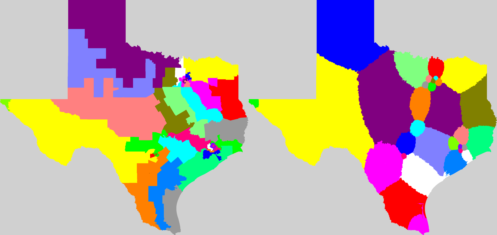
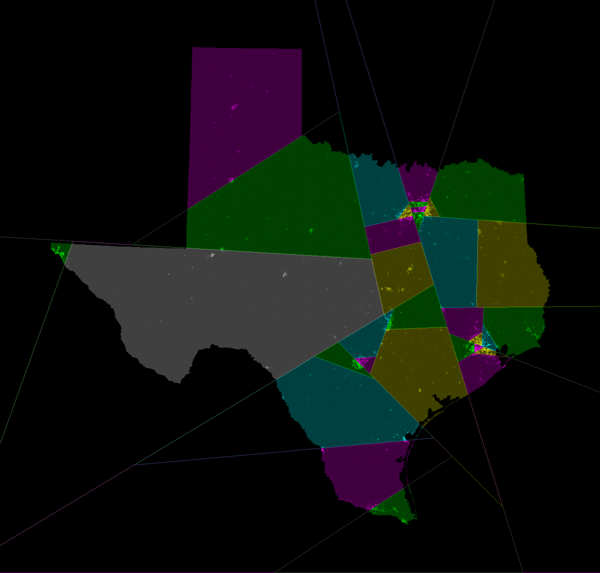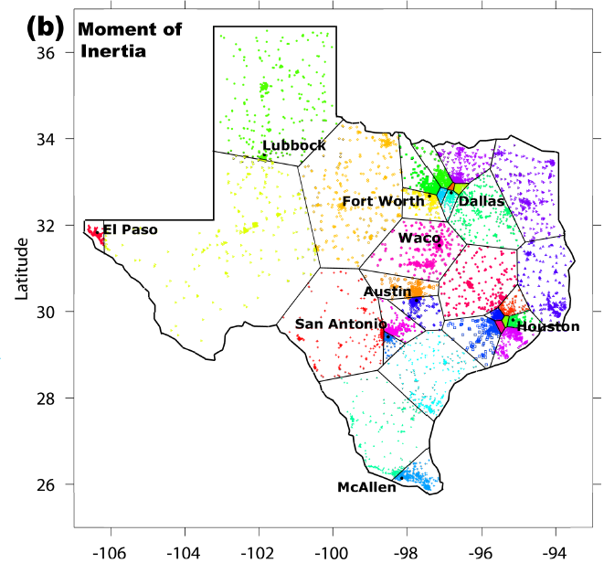
The official map is clearly utterly despicable garbage.
And if you liked TX's official districts based on the 2000 census,
you'll love the upcoming
new ones from the 2010 census – below check a detail insert from the
Texas State Legislature's
"plan C125" for congressional redistricting:
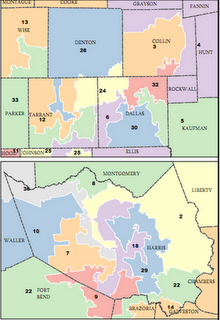
Meanwhile,
Olson's, the squared-dist-based, and the splitlining maps all are pretty reasonable.
Olson's map has jagged boundaries if viewed closely,
which is mainly because it follows census-block-boundaries (if Olson changed his program to
have it cut through census blocks, then his boundaries would smooth).
Note that Olson's districts have curved boundaries (even after smoothing)
while splitlining and optimizing the squared-distance-based measure both
always produce district boundaries made of straight lines (on a flat Earth; on
a round Earth splitlining still uses "straight" geodesic
segments but the squared-dist minimizer would employ slightly non-straight curves).
The basic structure of the Olson and splitline maps is almost identical, except
Olson has handled the two big districts in the Western part of the state
differently than (and in this case I think better than) splitlining.
And here's Virginia:
Official
Olson
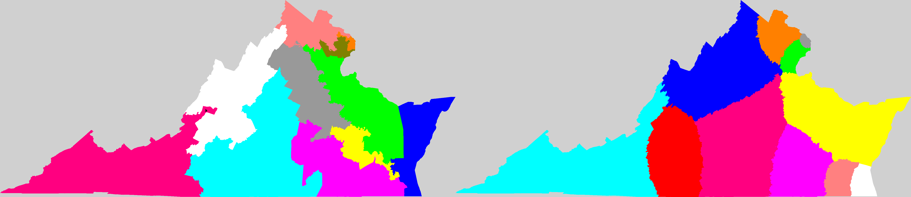
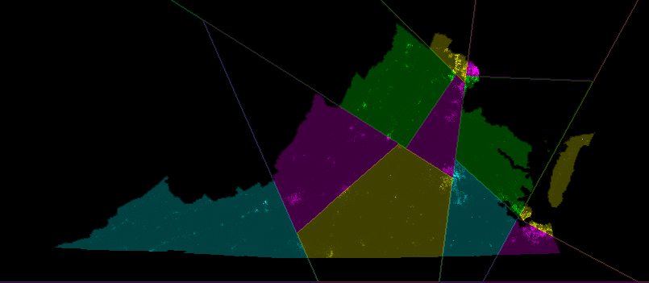
Splitlining
Again, the official gerrymandering at top left
is despicable garbage, and Olson and splitlining
both do a decent job and again are very similar except for the big western
district (which this time I think splitlining handles better than Olson)
and the fact splitlining pretty much puts the Delmarva peninsula at the East
(Accomack & Northhampton
counties; Chincoteague, Cape Charles)
in its own district, which I also prefer versus Olson.
(It can't entirely separate it
since there is not enough population in this peninsula to comprise
a full district, but it tries the best it can.)
We could similarly go through other states:
Click links to see maps calculated from year-2000 USA census data.
The "best" map according to my subjective eye, is starred(*); your opinion may differ.
Here's New Jersey (also districted by an "independent commission," ha ha ha):
Official
Olson
Splitline
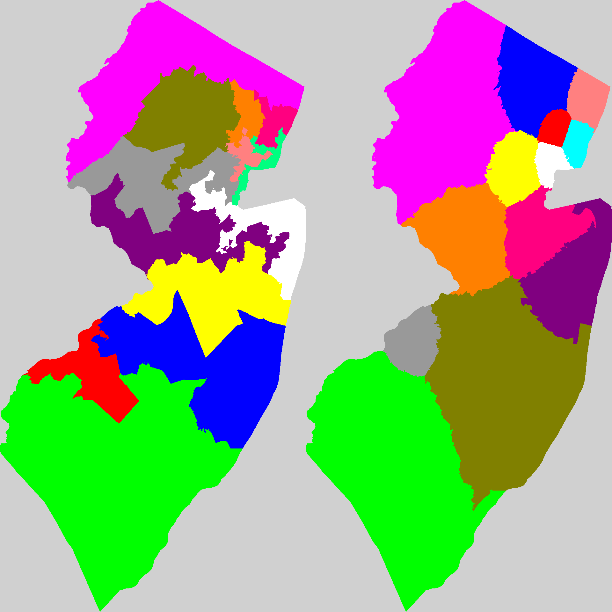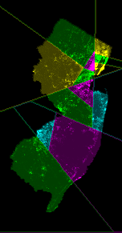
The conclusion for other states is almost always basically the same as for VA, TX and NJ.
This exercise has led me to be more impressed with splitlining –
even though it makes no serious effort to optimize, it nevertheless does quite well
most of the time. Certainly Olson and splitlining yield maps far more similar than
I would have naively expected.
Tentative "current fairness" analysis:
Another kind of comparative analysis has been made by "Walabio" and by Jameson Quinn.
Walabio claimed that
California has more Democratic voters than Republican, hence
with a "fair" district map should elect fewer Republicans than Democrats. But
Due to differences
in the ways Olson and splitlining divvy up voters near dense cities, combined
with the fact urban voters in the 2000-era USA tend to vote less Republican than
rural voters, Walabio
calculated that Olson's districting would elect more Republican than Democratic
congressmen!
Unfair!
Jameson Quinn then confirmed this assessment plus
examined some other states besides CA, and again concluded that splitlining,
at least with USA 2000-era voter distributions, tends to produce "fairer"
district maps than Olson's computer program, i.e. better-simulating
proportional representation.
I warn the reader that these conclusions are tentative, based on manual inexact
examinations of not very many US states. They could be just wrong.
Even if they are valid, I'm not sure what we should conclude. In future, for
example, maybe urban voters will prefer Republicans –
well, that would just yield reverse-direction unfairness, but more seriously,
the geographic distributions of
party-affiliation within states might change
in some other way – whereupon Olson's maps might
become the "fairer" ones. I don't currently understand that very well...
but anyhow as matters presently stand there is a not-very-confident conclusion splitlining's
maps are "fairer" than Olson's.
Acknowledgments
We thank
Stefano Zunino, James Gilmour, "Walabio," and Jameson Quinn,
for helpful comments and/or error-corrections.
The shortest splitline algorithm was programmed by Ivan Ryan.
References about political districting math & related topics
A. References about Weiszfeld-like iterations:
Weiszfeld's original paper [Tohoku Math. Journal 43 (1937) 355-386]
has been translated into English and republished:
Endre Weiszfeld: On the point for which the sum of the distances to n given points is minimum,
translated and annotated by F.Plastria, Annals of Operations Research 167,1 (March 2009) 7-41.
["Andrew Vazsonyi" and "Endre Weiszfeld" were same person.]
Other papers on this include:
Leon Cooper:
An extension of the Generalized Weber Problem,
J. of Regional Science 8,2 (1968) 181-197.
[Incidentally, this is not the physics Nobel prize winner Leon N. Cooper.]
Ulrich Eckhardt: Weber's problem and Weiszfeld's algorithm in general [Banach] spaces,
Math'l Programming 18,1 (1980) 186-196.
I.Norman Katz:
Local convergence in Fermat's problem, Math'l Programming 4,1 (1973) 98-107;
6,1 (1974) 89-104. [Shows Weiszfeld algorithm generically converges in ultimately geometric,
aka "linear," fashion, but convergence can be either sub- or superlinear in special cases.]
I.N.Katz & L.Cooper: Optimal location on a sphere,
Computers Math. Applic. 6,2 (1980) 175-196.
[Propose a Weiszfeld-like iteration for the Fermat problem on a round Earth.
It appears to converge generically in numerical experiments, e.g. see 27,6 (1994) 37-50.]
Harold W. Kuhn: A note on Fermat's problem, Math'l Programming 4,1 (1973) 98-107.
[Careful proof of convergence of Weiszfeld iteration to optimum. But his final theorem
is only correct in 2 dimensions or if the convex hull of the sites is full-dimensional.]
H.W.Kuhn & R.E.Kuenne:
An efficient algorithm for the numerical solution of the generalized
Weber problem in spatial economics, J. of Regional Science 4,2 (1962) 21-33.
[Found 7 Weiszfeld iterations always sufficed to solve 15 problems with up to 24 sites.
Although it is possible to devise problems for which Weiszfeld's convergence is very slow,
they arise rarely in practice.]
James G. Morris:
Convergence of the Weiszfeld Algorithm
for Weber Problems Using a Generalized "Distance" Function,
Operations Research 29,1 (Jan-Feb 1981) 37-48.
[Morris and Cooper1968 both consider minimizing the sum of Kth powers
of the distances to the sites, K>0. Morris further
generalizes by allowing Lp distance for any p≥1.
The triangle inequality holds if p≥1 and 0<K≤1, but not if K>1 or 0<p<1.
The summed-power-distance function is concave-∪ if K≥1 and p≥1, but not if 0<K<1.
Morris devises a Weiszfeld-like iteration and proves convergence if 1≤p≤2 and 0<K≤p
and it never lands exactly on a site. Cooper considers only p=2 and
considers the obvious generalization of Weiszfeld's iteration in which the site-weights are
proportional to the (K-2)th power of the distance to that site. He conjectures this
iteration generically converges to the optimum for every K with 1≤K<∞,
based on the fact that he successfully solved 180 such problems by computer.
But this has only been proven for K=1 and K=2.]
Lawrence M. Ostresh Jr: On the convergence of a class of iterative methods for solving the
Weber location problem. Oper. Res. 26,4 (1978) 597-609;
Convergence and Descent in the Fermat Location Problem,
Transportation Science 12,2 (May 1978) 153-164.
[Ostresh's 2nd paper first notes that
if the sites are non-collinear the
sum-of-distances function is strictly concave-∪ hence has a unique minimum.
Given that, he
proves Weiszfeld's descent theorem in 1 paragraph (thm2) then further
proves (thm3) that any
point in a ball centered at the new Weiszfeld point, with radius being
the distance to the old one, yields descent. That makes it trivial to avoid the
slight flaw in the Weiszfeld iteration that if you land exactly on a site, you need
to divide by 0 and die.]
Liping Zhang:
On the convergence
of a modified algorithm for the spherical facility location problem,
Operations Research Letters 31,2 (2003) 161-166.
[Gives an algorithm which he proves under certain circumstances always converges to the
Fermat global-optimum point on a round Earth. Because the sum-of-spherical-distances
function is "spherically concave-∪" if all sites lie on the same hemisphere, and "strictly"
so if they do not all lie on a single geodesic, it is clear there is no fundamental difficulty in
devising such an algorithm; many approaches will work. Similar remarks can be made
about the K-powered Lp distance variant with K≥1 and p≥1.]
B. The COMAP/UMAP districting-math contest of 2007:
UMAP (undergraduate journal of maths & applications) issue
28,3 (Fall 2007) pages 191-332, contains 5 papers on political districting.
Except that really, it only contains only one paper, because
pages 261-450 are missing
from the printed journal, though allegedly available on a CD-ROM. (Not
in my library!)
These papers were judged the best 5 among 351 submissions (by teams of undergraduates all over
the world) to a contest. Here are those papers:
Ingredients of our suggested
two phase approach and the Voronoi theorem were discovered and rediscovered
and/or refined by a number of people listed above and below (including by me; the earliest
discoverers seem to be Weaver and Hess in the early 1960s), but we've relied mainly on
its treatment by Spann et al.
C. Other books and papers:
Sanjeev Arora:
Polynomial-time Approximation Schemes for Euclidean TSP and other Geometric Problems,
Journal of the ACM 45,5 (1998) 753-782.
Approximation schemes for NP-hard geometric optimization problems: A survey,
Math'l Programming 97,1-2 (July 2003) 43-69.
S.Arora, P.Raghavan, S.Rao:
Approximation schemes for Euclidean k-medians and related
problems,
STOC 30 (1998) 106-113.
David Arthur & Sergei Vassilvitskii:
k-means++: The Advantages of Careful Seeding,
Proceedings 18th annual ACM-SIAM symposium on Discrete algorithms SODA (2007) 1027-1035.
[Unfortunately their proof does not work if we demand equipopulousness.]
H.S.M.Coxeter:
NonEuclidean geometry,
Mathematical Association of America 1998 (originally written in the 1950s).
QA685.C83
G.B.Dantzig:
Linear programming and extensions,
Princeton Univ. Press 1963.
S.P.Fekete, H.Meijer, A.Rohe, W.Tietze:
Solving a "hard" problem to approximate an "easy" one: good and fast heuristics
for large geometric maximum matching and maximum Traveling Salesman problems,
Journal of Experimental Algorithms 7 (2002), article 11.
Werner Fenchel:
Elementary geometry in hyperbolic space,
W. de Gruyter, Berlin 1989.
QA685.F38
Junichiro Fukuyama:
NP-completeness of the planar separator problems,
J. Graph Algorithms & Applications 10,2 (2006) 317-328.
M.R.Garey & D.S.Johnson:
Computers and Intractability: A Guide to the Theory of NP-Completeness,
Freeman 1973.
R.L.Graham, E.Lubachevsky, K.J.Nurmela, P.R.Ostergard:
Dense
packings of congruent circles in a circle,
Discrete Maths 181 (1998) 139-154; see also
wikipedia's
summary of this.
S.W.Hess, J.B.Weaver, H.J.Siegfeldt, J.N.Whelan, P.A.Zitlau:
Nonpartisan political districting by computer, Operations Research 13 (1965) 998-1106.
Mehran Hojati:
Optimal political districting,
Computer & Operations Research 23,12 (1996) 1147-1161.
[This paper proves an NP-completelness result and also suggests a method resembling both our
2-phase improver and the Spann-Gulotta-Kane approach,
for minimizing sum-of-squared-distances measure;
and finally tries the method out on the problem of dividing Saskatoon into 42 districts.]
H.B. Hunt III, M.V. Marathe, V.Radhakrishnan, R.E.Stearns:
The complexity of planar counting problems,
SIAM J. Computing 27,4 (1998) 1142-1167.
Meena Mahajan, Prajakta Nimbhorkar, Kasturi Varadarajan:
The planar k-means problem is NP-hard,
Theoretical Computer Science 442 (July 2012) 13-21.
A preliminary version appeared in Proceedings of
3rd Annual Workshop on Algorithms and Computation
(WALCOM 2009) in Kolkata India;
Springer-Verlag LNCS#5431, pages 274-285. [They also remark that another
NP-hardness proof was found independently by Andrea Vattani, which works for
k≈Nc for any 0<c<1.]
Nimrod Megiddo & Kenneth J. Supowit:
On the Complexity of Some Common Geometric Location Problems,
SIAM J. Comput. 13,1 (1984) 182-196.
[In their proof of the NP-hardness of the "k-median problem," it is almost trivial
to make their NP-hard
point-set have equal numbers of points served by
each median in the optimal solution. Then it shows NP-hardness of
Olson-optimal equipopulous districting. The same remark applies to the
Mahajan et al NP-completeness proof for the "k-means problem," thus showing the NP-completeness
of optimal equipopulous districting under the squared-distance-based cost measure.]
Joseph S.B. Mitchell:
Guillotine Subdivisions
Approximate Polygonal Subdivisions:
A simple polynomial-time approximation scheme for geometric TSP, k-MST, and related problems,
SIAM J. Computing 28,4 (1999) 1298-1309.
There is also
an extension/improvement of these techniques by Mitchell
and a subsequent survey/reexamination of them by
by X.Cheng, D-Z.Du, J-M. Kim, H.Q.Ngo 2001.
F.P.Preparata & S.I.Hong: Convex hulls of finite sets of points in two and
three dimensions, Communicationa of the Assoc. for Computing Machinery 20,2 (Feb.1977) 87-93.
F.P.Preparata & D.E.Muller:
Finding the intersection of n halfspaces in time O(nlogn),
Theoretical Computer Science 8 (1979) 45-55.
Kokichi Sugihara:
Laguerre Voronoi Diagram on the Sphere,
J. Geometry and Graphics 6,1 (2002) 69-81.
Pravin M. Vaidya:
Geometry helps in matching,
SIAM J. Comput. 18,6 (1989) 1201-122;
Approximate Minimum Weight Matching on Points in k-Dimensional Space,
Algorithmica 4,4 (1989) 569-583.
Kasturi R. Varadarajan:
A Divide-and-Conquer Algorithm for Min-Cost Perfect Matching in the Plane,
39th Annual Symposium on Foundations of Computer Science
SFOCS 39 (1998) 320-331;
K.R. Varadarajan & Pankaj K. Agarwal:
Approximation algorithms for bipartite and non-bipartite matching in the plane,
Symposium Computational Geometry (SoCG 2004) 247-252;
Symposium on Discrete Algorithms (SODA 1999) 805-814.
Andrea Vattani:
K-means requires exponentially many iterations even in the plane,
Special Issue of Discrete and Computational Geometry 45,4 (March 2011) 596-616.
Andrea Vattani:
The NP-hardness of k-means clustering in the plane,
Manuscript filched from Vattani's web page 2009.
B.Weaver & S.W.Hess: A procedure for nonpartisan districting,
Yale Law Journal 73 (1963) 288-308.
Justin C. Williams Jr: Political redistricting – a review,
Papers in Regional Science 74,1 (1995) 13-40.
D. References about measuring district-shape "quality" (mostly embarrassingly bad ideas):
Ronald R. Boyce & W.A.V.Clark: The concept of shape in geography,
Geographical Review 54 (1964) 561-572.
Christopher P. Chambers & Alan D. Miller: A measure of bizarreness,
Quarterly Journal of Political Science 5,1 (2010) 27-44.
C.C.Harris: A scientific method of districting, Behavioral Science 9 (1964) 219-225.
H.F.Kaiser: An objective method for establishing legislative districts,
Midwest J. Political Science 10 (1966) 200-213.
Lee Papayanopoulos: Quantitative measures underlying apportionment methods,
Annals New York Academy of Sciences Special Issue 219 (1973) 181-191.
E.C.Roeck: Measuring compactness as a requirement of legislative apportionment,
Midwest J. Political Science 5 (1961) 70-74.
Joseph E. Schwartzberg: Reapportionment, gerrymanders, and the notion of compactness,
Minnesota Law Review 50 (1966) 443-452.
Peter J. Taylor: A new shape measure for evaluating electoral districts,
American Political Science Review 67,3 (1977) 947-950.
Takeo Yamada: A minimax spanning forest
approach to the political districting problem,
Int'l J. Systems Science 40,5 (May 2009) 471-477.
H.P.Young:
Measuring the compactness of legislative districts,
Legislative Studies Quarterly 13,1 (1988) 105-115.
[Discusses how bad various district-shape-quality measures advanced by
previous authors are, hence suggests giving up on all of them and abandoning problem as
hopeless. But his review also is of low quality, e.g. contains not a single theorem
and reaches some too-rapid conclusions via extremely shallow reasoning.]
E. Other Redistricting Websites
Brian Olson has a nice website
where he exhibits maps drawn by his open-source program trying
to use "simulated annealing" and
immense amounts of computation
to work out probably-near-optimum district maps for all
50 states ("optimum" using a bastardized variant of the least-average-distance-to-center
measure described above). He's done that for both the year-2000 and
2010 censuses.
Drs. Michael McDonald & Micah Altman
have an automated redistricting and districting-analysis tool called BARD
(Better Automated ReDistricting).
Dave's Redistricting has a program you can run to tinker with district maps if you have microsoft silverlight.
The Shortest Splitline Algorithm tries to make fair maps by making a reasonable line at every step. Also a public-source program;
successfully run on year-2000 census data for all 50 states.
But the US Census Bureau changed their data format for 2010, breaking the program.
George L Clark has written his own redistricting software and come up with some good, substantially similar and interestingly different solutions based on a perimeter measure.
Kevin Baas's
autoredistrict.org:
"Auto-Redistrict is a free and open source computer program that automatically creates fair and compact electoral districts. Simply open a shapefile, load in census and election data (if not already included in the shapefile), and hit 'Go.'
Auto-Redistrict uses a genetic algorithm to design districts that meet multiple criteria..."
It seems highly sophisticated, but also complicated and
computationally very intense, and he makes a lot of decisions that
seem suspicous to me. Baas has a lot of original ideas.
High quality authoritative congressional district
maps are available from
nationalatlas.gov
{kind=link}
{kind=link}
{kind=link}
{kind=link}
{kind=link}
{kind=link}
{kind=link}
{kind=link}
{kind=link}
{kind=link}
{kind=link}
{kind=link}
{kind=link}
{kind=link}